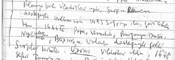

KURULUŞ TARTIŞMALARI
Osmanlı’nın kuruluşuyla ilgili birçok temel mesele bugün tarihçiler arasında tartışılmakta ve yeni tezler ortaya atılmaktadır.39
Örneğin, bir Osmanlı ırkı ve kavmi var mıdır? Osmanlılar Kayı boyundan gelen Türkleşmiş Moğollar mıdır? Osmanlı İmparatorluğu Rumeli’de kurulduktan sonra mı Anadolu’yu içine almıştır?
Bu tartışmaların merkezinde hep ünlü tarihçi ve siyaset adamı M.Fuad Köprülü vardır.
Alman bilim adamı J. Marquart 1914’te Komanlar konusunda W.Bang ile birlikte yayınladığı kitapta “Osmanlıların mensup olduğu Kayı boyunun, Moğolistan’daki Kay kavmi olduğunu, o nedenle Osmanlıların Kay boyundan gelen Türkleşmiş Moğollar” olduğunu öne sürer. Köprülü, 1943’te yazdığı uzun makalede bu tezi çok sert eleştirir.4041Köprülü, ayrıca Carl Brockelmann’ın bu tezin Kaşgarlı Mahmud’un ifadesiyle doğrulandığını belirtmesi üzerine de çok övdüğü bu ünlü Türkolog’un Kaşgarlı Mahmud’un Kayıları Kumanlardan ayırdığına dikkat etmemiş olmasını garipser. Buna karşı Paul Pelliot’un Komanlarla ilgili bir makalesindeki şüpheci tutumunu över.42Daha sonra Prof. Zeki Velidi Togan’ın 1941’de yayınladığı bir makalede Marquart’ın tezini değişik bir biçimde savunmasını da başka kaynaklara başvurarak reddeder.43
KAYI BOYU TEZİ “ROMANTİK BİR UYDURMA” MI?
Köprülü, aynı makalede son olarak “aziz arkadaşım” dediği Paul Wittek’in “Osmanlı sülalesinin Kayılardan olmadığı” tezini eleştirir. Wittek gerek 1938’de yayımladığı kitapta44 gerekse 1938’de Paris Sorbonne’da verdiği konferansları derlediği makalesinde,45Osmanlı devletinin herhangi bir kabile teşekkülü tarafından değil “hudutlardaki Gaziler tarafından kurulduğunu” öne sürmektedir. Ona göre Osmanlıların Kayılardan olduğu iddiası Murat II devrinde başlayan bir çeşit romantik akımın etkisiyle XV. yüzyıl Osmanlı tarihçileri tarafından uydurulmuştur. Fuad Köprülü buna karşılık, kendisinin de bir zamanlar (1925’te) “Kayı tezinin sonradan uydurulduğu” görüşünde olduğunu, ancak 1934’te Paris’te verdiği konferanslarda bu fikirden vazgeçmesinin nedenlerini etraflıca açıklamış olduğunu belirtir. Sonra “değerli arkadaşını” ikna etmek üzere yeni bazı kaynaklar ve argümanlar sunar, sunduğu kaynaklar arasında Herbert Adams Gibbons’un Osmanlı Devletinin Kuruluşu adlı kitabı da vardır.4647Sonuç olarak Köprülü söz konusu makaleyi şu kesin yargılarla bitirir: “Osmanlı sülalesi Kayı boyuna mensup küçük bir aşiret parçasının başında bulunan Osman tarafından kurulmuştur; Osmanlı devleti, siyasi gelişiminin ilk aşamalarında bile asla tribal (aşirete dayanan) bir mahiyet göstermemiştir.” Başka bir yerde ise şöyle diyecektir: “…Osmanlı devletinin kuruluşu muamması, henüz izah edilmekten, hatta biraz aydınlatılmaktan çok uzaktır” 4849
OSMANLI DEVLETİ ANADOLU’DA MI KURULDU,
RUMELİ’DE Mİ?
Gibbons ve Wittek’in tezlerinin içinde yer alan “Osmanlı İmparatorluğu’nun Rumeli’de kurulduktan sonra Anadolu’yu içine aldığı iddiası” da kuruluş tartışmalarının unsurlarındandır ve yine Köprülü tarafından eleştirilmiştir.
Gibbons’a göre Osmanlıların büyümesi yeni grupların ona katılmasıyla mümkün olmuştur. Osmanlılar, ancak Balkanlar’daki fetihlerden sonra Anadolu’daki topraklarını genişletebilmişlerdir. Balkanlar’daki fetihleri, tahrip ve yağma maksadıyla yapılmış bir akın değil, planlı bir yerleşmedir. Osman ve onun küçük aşireti çobanlıkla geçinen müşrik Türklerdi. Moğollardan kaçıp Anadolu’ya geldikten sonra Müslümanlığı kabul ettiler ve dostça ilişkiler içinde oldukları Hıristiyan Rumları da Müslüman olmaya zorladılar. Böylece ortaya çıkan Osmanlı ırkı doğduğu yerde mevcut unsurların birbiriyle kaynaşmasından oluşan karışık ve yeni bir ırktır. Müşrik Türkler ve Hıristiyan Rumlar, İslam dinine girmek suretiyle bu yeni ırkı beraberce oluşturdular. Devşirme kurumu bunun bir aracı oldu. Bununla beraber dinsel özgürlük ilkesine bağlı kaldılar. Osmanlı devleti esas kuvvet ve kudretini Rumeli’de kazandı ve o sayede Anadolu’da rakiplerini alt edebildi. Balkan yarımadası Hıristiyanları İmparatorluğun kurulmasına yardım ettiler.50
Wittek’in tezinde ise kan bağı veya kavim gibi özelliklerin tek neden olamayacağı söylenir. Ona göre Osmanlı genişlemesinin esas nedeninin uç kültürü ve gazi karakteri olduğunu daha önce belirtmiştik.
Köprülü bu tezleri reddederken, “hiçbir zaman bir Osmanlı ırkı ve Osmanlı kavminin mevcut olmadığını, etnik değil sadece politik bir tabir olan Osmanlı kelimesinin eski vakanüvislerde daima ‘devlet hizmetinde bulunan ve devlet bütçesinden geçinen hâkim ve müdir sınıf’ anlamına geldiğini” öne sürer.51Gibbons ve Wittek’in Osmanlı İmparatorluğu’nun, Rumeli’de kurulduktan sonra Anadolu’yu içine aldığı düşüncesine katılmamaktadır.5253Ancak bir makalesinde Osmanlı’daki bazı mevki ve kavramların Bizans’taki karşılıklarını göstermiş, hatta pronoia’nin bir çeşit tımar olduğunu belirtmiştir.5455
“ANADOLU’YA HÂKİM OLAN BOĞAZLARA
HÂKİM OLUR”
Ünlü Bizans Tarihçisi Steven Runciman ise konuya daha farklı bir açıdan bakmaktadır. İstanbul Üniversitesi Edebiyat Fakültesi Bizans Tarihi kürsüsündeyken 23.5.1942’de verdiği konferansta özetle şunları söylemiştir: “…Anadolu’nun merkezini tam bir hâkimiyet altında bulundurabilen bir devlet vaziyete tamamen hâkim sayılabilir. Böyle bir devlet Anadolu’daki hâkimiyeti dolayısıyla Boğazlara da sahip olabilir… Bizanslılar, Roma devletinden birleşik ve iyi idare edilmiş bir Anadolu tevarüs ettiler. Romalılar Anadolu vilayetlerinin önemini takdir etmiş, ona göre mükemmel bir yol şebekesi kurmuş ve yeniden birçok şehirler vücuda getirmişlerdir… Bizans tarihinin asıl anahtarı Anadolu tarihidir... Latin İmparatorluğu denilen imparatorluğun tarihi, denizlere hâkim olmakla beraber, Boğazların ancak sahillerinden başka araziye malik olmayan bir devletin yaşamına imkân olmadığını gösterir… Modern bir tarih âlimi bu sonraki Bizanslıların İstanbul’u tekrar hükümet merkezi yapmakla büyük bir hata işlediklerini iddia etmektedir... Gerçekten de, sonraki Bizanslılar ne yapsaydılar yine Türk istilasının önüne geçemezlerdi. Fakat bizzat Osmanlılar bile tarihten ibret almayı ihmal ederek ellerindeki bütün arazi ve hâkimiyeti kaybetmek tehlikesine atıldılar. Batı Anadolu’da yerleşir yerleşmez, tıpkı İznik İmparatorluğu gibi –fakat daha büyük ölçüde– harekete geçerek Orta ve Doğu Anadolu’da kuvvetli bir idare kurmayı beklemeksizin Avrupa’ya geçtiler… Bu yüzden de Osmanlı devleti Ankara’da hemen hemen yok olmaya uğramak tehlikesini geçirmişti. Timur, ordularını Anadolu’da tutmuş yahut da onun peşinden başka bir düşman akın etmiş olsaydı, Osmanlı devleti tamamıyla ortadan kalkabilirdi. Fakat Osmanlı padişahları nihayet tarihten ibret aldılar ve Avrupa’da daha fazla fütuhata kalkışmadan evvel Anadolu’yu fethettiler…”56
RUMELİ FETHİNİN PÜF NOKTASI:
GENİŞLEMEDE BALKAN KATKISI
Rumeli fethinin püf noktası feodalleri bertaraf edip yerli halkla –köylüyle– birleşme, dinine dokunmama hatta tımar vermedir. Bu da aynen Selçuklu’nun Anadolu’ya yerleşmesine benzer.
Balkanlar’da Osmanlı fütuhatının şartlarını yetkinlikle inceleyen İorga, bir eserinde aynen şu görüşleri ileri sürmüştür: “Bir asır içinde yerlerini Osmanlı İmparatorluğuna terk eden Balkan Hıristiyan devletleri, umumiyetle sanıldığı gibi, Hıristiyan dinini yok etmek isteyen mutaassıp bir düşmanının sebep olduğu dini bir katastrofla ortadan kaldırmış değildirler… Osmanlılar monarşik birliği ve mutlakıyetin sulh ve sükûnunu, bir tek efendinin hükmünü getirdiler. Osmanlılar bir kavim olarak değil, bir ordu, bir hanedan, bir hâkim sınıf olarak ortaya çıktılar.” “Bizans, Slav ve Osmanlı siyasi nizamları bir tek bütün içinde birbirleriyle kaynaştı.” Mahalli feodal hâkimiyetler, devrin umumi tarihi temayülünü temsil eden Osmanlılar önünde birer birer silindi ve Osmanlı birliği içine karıştı. Rumen tarihçisi anarşiden bıkmış olan köylü sınıfların yeni vahdetçi Osmanlı nizamına taraftar gördüğünü işaret ediyor ve diyor ki: ”idareciler nadiren Türk menşeinde idiler… Subaşı, bey, kefalya; eski knez, voyvoda veya onların yakın akrabası veyahut imparatorluğun başka bir eyaletinden gelmiş bazen aynı sıfatla eski bir Hıristiyan’dan başka bir şey değildirler.” Fakat İorga da, idare sınıfına girebilmek için İslamiyeti kabul etmenin bir şart olduğunu düşünüyor.57
L.Hadrovics son zamanlarda yayınladığı bir eserde Osmanlı İmparatorluğu’nun Rumeli’deki teşkilatının kuvvetle Rum ve Slav tesiri kalmış olduğuna işaret etmekte ve demektedir ki: “Sırpların, Türk fatihlerle birlikte Macaristan’a derin suretle nüfuzu ve kalelerde muhafaza kuvvetlerinin ekseriyetini teşkil etmesi keyfiyeti, Balkanlar’daki Türk ordusunun, atalarının dininde yaşayan İslam olmamış Sırp elemanlarıyla dolu olduğunu düşünmemize imkân vermektedir.”58
RUMELİ’NİN FETHİNDE BİZANS
FEODALİZMİNİN ROLÜ
Ostrogorsky, Bizans’ın çöküşü ve yıkılışı konusuna girerken şu saptamayı yapar: “Osmanlıların Balkanlar’da yerleşmesi arızî bir hadiseye bağlı değildir; Bizans kudretinin Balkanlar’da çözülmesinin tabii bir neticesidir.”59Vasiliev ise Bizans’ta feodalizmin yeterince incelenmediğini belirttikten sonra şunları anlatır: “Uzun zaman feodalizm münhasıran ortaçağ Batı Avrupa’sına münhasır bir olay diye incelendi. Bütün Avrupa’da homojen ve özünde aynı sayıldı. Son zamanlarda feodalizm daha geniş anlaşılıyor. Batı Avrupa feodalizmi, feodalizmin bir türüdür. Geniş anlamda ise bazı tarihçilere göre bütün halklar tarihsel gelişme içinden geçer. Kuşkusuz her yerde feodal süreç tam gelişmesine ulaşmış değildir. Bazen süreç sosyal yönüyle sınırlıdır. Ama geniş anlam kazanınca eski Mısır, Arap Halifeliği, Japonya, eski Rusya vs. birçok bilgine feodalizmi buldurdu. Batı feodalizminin kökeninde de çok zıt görüşler öne sürüldü: Asilikten ortaçağa geçerken dönüm noktasında mevcut: kimileri Germen ve Roma koşullarından çıkarır, kimileri Karolonjien mevzuatının sonucu sayar, kimileri ise bilinmeyen eski Germenik yaşamının, sosyal koşullarından çıkarır. Batı feodalizminin ayırt edici birçok özellikleri kısmen Roma İmparatorluğu’nun son üç yüzyılındaki özellikleriyle açıklanır. Bu unsurlar daha sonra feodalizmin kurucu kısımları oldu. Batıda merkezi otorite gerileyince uzun süre birbirinden bağımsız olan unsurlar bir kişide yoğunlaştı. Kuşkusuz bu evrim çeşitli ülkelerde çeşitli yollardan oldu.
Bizans’ta daha feodalizm incelenmedi, yoğun çalışma gerekli. Genellemede dikkatli olmalı. Ama artık hiç değilse feodalizm ve feodal süreçten söz edilebilir, eskiden Bizans feodalizmi deyimi çelişkili gözükürdü. Roma’nın devamcısı olduğuna göre peşinen unsurların varlığı kabul edilebilir. Sorun bu olayın ne ölçüde gerçekleştiği ve Doğu eyaletlerinin değişik koşullarında ne biçimler aldığıdır. İlginçtir ki Ortaçağ Batı Avrupa Latin istilacıları (Bizans’ı istila eden Haçlılar), Doğu İmparatorluğu’nun işgal edilmiş topraklarına yerleşince yöresel arazi koşullarını Batıdakine pek benzer ve kendi feodal biçimlerine rahatlıkla uyarlanabilir buldular. Kharistikarion60 sorununun da incelenmesi Batı, Slav ve Osmanlı arasında birçok benzerlik ortaya koyacaktır.”61Buna karşın Osmanlı Tımar sistemi, toprak mülkiyetine izin vermediği için Türklerin yönetimindeki bütün ülkelerde toplumsal ve ekonomik gelişmenin feodalizmin ilk aşamasındaki düzeyde kalmasına yol açmıştır. Werner de buna benzer bir kanıdadır. Osmanlı feodalitesini incelediği kitabında vardığı sonuçlardan biri şudur: “…feodalizmin ilk yükselme safhasında Türkler askeri ve sivil sistemin içinde hiçbir zaman tam olarak eriyip gitmediler, tam tersine üretim alanlarına katıldılar… Osmanlılar gerçi feodal yüksek kültürlerin ögelerini aldılar, ama kültür alanında meydana gelen çift-kutupluluğu eritip senteze doğru yükselmek onları ilgilendirmiyordu. Savaşçı Osmanlı feodalizmi, kısmen koruduğu kısmen de ilkelleştirdiği olgun Balkan feodalizminin üstünü örttü.”62
BİZANS’IN EKONOMİK ZAYIFLIĞI
TÜRKLERİN AVRUPA’YA YERLEŞMESİNE YARAR
Mustafa Akdağ, Türklerin Anadolu’ya gelişlerinde Bizans’ın şiddetli bir para darlığı içinde olduğunu ve bunun da Türklerle Rum halk arasında “Marmara İktisadi Ünitesi” denebilecek bir birliğin doğmasına neden olduğunu savunur. “Türk halk zümreleri yeni vatanlarının tabii ve iktisadi icaplarına pek çabuk uymaktaydılar; halı, sof, kuru meyve, hayvan, kereste, şap gibi maddeler bol bol ihraç ediliyordu. Ayrıca şark mallarını kervanlarla Bizans pazarlarına getirmeyi de Anadolu Türkleri üzerlerine almışlardı. Bu hal şehirlerde ve kasabalarda pek çok halkın toplanmasına sebep olmakta idi. Türk korporasyonları (Ahilik) büyük bir teşkilat haline giriyorlardı. Bütün Selçuki-Bizans hudut çevresinde bulunan şehirler, hangi tarafın arazisinde olursa olsunlar, Türklerle Rumların birbirleriyle alışveriş ettikleri birer pazar halindeydiler… Böylece, Osmanlı İmparatorluğu’nun doğmasına ait sosyal-ekonomik bir zemin hazırlanmakta idi… Sonuç olarak, Marmara iktisadi ünitesi üzerine siyasi hâkimiyetlerini yaymaya başlayan Osmanoğulları, daha ilk hareketlerinde, Anadolu’daki iktisadi değişikliğin kadro dışı ettiği çeşitli sosyal-iktisadi zümrelere mensup pek çok insanların gelip kendilerine katıldıklarını gördüler.”63Werner bu tezlere karşı çıkar: “Marmara birliği diye bir şey hiçbir zaman olmadı. Anadolu ve Grek yarımadasının iktisadi toplumsal gelişmesi paralel değil, tersine farklı aşama yönünde. Filipoviç de ekonomik ve sosyal bunalım saf teşkilat vasıtaları ve yöntemle çözülemez diyor. (A-4 15) Stadtmüller’in tezi daha az doyurucudur: Bütün göçebelerde görülen doğuştan savaş isteği ve kahramanlık hevesi Osmanlı’nın iktidar içgüdüsünü yükseltti!”6465
RUMELİ’YE YERLEŞİRKEN “KÂFİRLERİ
İNCİTMEDİLER”
İnalcık’a göre Bizanslı kendisine “Romaioi” ve ülkesine “Romania” der. Bu nedenle İslam dünyası Bizans’ı Rum ve Roma İmparatoru, ülkesini Bilad-al Rum veya memlekat-al Rum diye tanır. Anadolu Türk-İslam egemenliğine geçince Anadolu ve Rum aynı anlamda kullanılır. Fakat Batılı gezginler XIII. yüzyılda Türk idaresindeki Anadolu’ya “Turquemenie” veya “Turquie” derler. Bizans’a ait yerlere ise “Romanie” veya “Romania” diyorlar. Nihayet bu tabir, daha çok Ortodoks Yunan mezhebinin egemen olduğu Balkan yarımadasındaki yerlere denildi. Osmanlı, “Rum-ili”yi (Rumeli) “Romania”dan alır.
Fetih siyaseti ile ilgili olarak Âşık Paşazade, “Bu yerlerin kâfirlerini incitmediler, belki küfürlerine dahi ihsan ettiler. İçinden birkaç bellice kâfirlerini tuttular. (…) Çimbi kâfirleri, bu kâfirler ile müttefik oldular” der.66Köylü tutulur, derebeyi bertaraf edilir, karşı koymazsa Osmanlı askeri kadrosuna alınır. Murat II ve Fatih döneminde bile eski Bizans tımar topraklarında (pronoia) Osmanlı tımar sipahisi ve Hıristiyan asker aileleri vardır. Keza Duşan idaresinde eyaletlerde “Voynuk” diye gördüğümüz küçük arazi sahibi askerler vardır. Osmanlı’da da Voynuk devletin askeri kadrolarında muhafaza olunur. XV. yüzyılda Makedonya, Teselya ve Arnavutluk’ta aynı ad altında önemli miktara varır. Keza Tuna üzeri kalelerde “martoloslar” ve “eflâk” adı altında askeri nizama tabi Hıristiyan göçebeler kendi beyleri idaresinde Osmanlı askeri kadrosuna alınır. Bu siyaset yayılışı kolaylaştırır. Fakat asıl Ortodoks kilisesine iyi davranış ve vergi siyaseti Osmanlı yönetiminin geniş halk kitleleri ve köylü sınıfı tarafından benimsenmesini sağlar.
Bizans, Bulgar Çarlığı ve Duşan İmparatorluğu’nun düştüğü bir dönem, merkezi kuvvet yoktur. Bu nedenle Garp derebeyliği âdetleri Balkanlar’da yerleşmeye başlar. Merkezi karar yoktur, derebeylik yayılır.67 Osmanlı’nın tekfur dediği bu yöresel senyörler toprağı daha sıkı bir şekilde kişisel kontrolünde tutmaya çalışır. Mahsul vergileri ve belli nakdi arazi vergisinden başka, yılda bir araba odun, bir araba ot, yarım araba saman vermek ve senyörün topraklarında üç gün çalışmak gibi angaryaları bile vardır. Bayramlarda hediye vermeye mecburdur. Eski devlete ait tımar arazisi gittikçe bu senyörlerin veya manastırların mülkü haline gelir, işlediği toprakta köylünün durumu kötüleşir.
Osmanlı ise, tarım topraklarını “miri arazi” adıyla devlet kontrolüne sokar, yöresel derebeyliğe son verir. Angaryaları sistemli biçimde kaldırır. Angarya hizmetlerini bir vergi ile çift resmi ile karşılar.68Osmanlı istilası karşısında köylü kitlelerinin desteğini sağlayamayan senyörler haçlı bayrağı altında garptan gelen Latinlerin ve Macarların himayesini aramaktadırlar. Katolik olan Latinler ve Macarlar ise, Rafızî saydıkları yerli Ortodoks halktan nefret etmekte, onları zorla Katolikliğe sokmak için şiddet kullanırlar. Zengin tüccar olarak memlekete yerleşen İtalyanlara karşı yerli halkın nefret ve kinini de buna eklemek gerekir. Oysa Osmanlı her gittiği yerde metropolitlikleri tanır, himaye eder, üstelik onlara tımar verir ve böylece doğrudan doğruya devlet memuru durumuna getirir.
OSMAN’IN BAŞARISININ NEDENLERİ
Osmanlı beyliğini kurmuş olan Osman, Gazi ve Bey (beg) veya emir, emir-ul mu’azzam unvanlarıyla yetinmiş görünür. Sonraki rivayetlerde Osman için Han unvanı da yakıştırılır. Türkçe asil savaşçı anlamında Avrasya’da kullanılan alp unvanının karşılığı olarak kullanılır. Osman’ın kardeşi Gündüz ve silah arkadaşları hep alp unvanını taşırlar. Aynı zamanda Moğolca aynı anlamda bagatur unvanını bahadır şekliyle alp karşılığı kullanmışlardır.69
Alaattin Keykubat 400 ailelik Kayı boyunun reisi Ertuğrul’a Söğüt tımarını verir. Göçebeler ona dalga dalga katılır. Wittek’e göre beylik doğal aşiret kökenine değil, gazi ittifakına dayanır. Barkan’a göre bu görüş abartılıdır, Osman’ın yandaşlarının çoğunun adı gazi adı değildir. Ama Barkan’ın dediği gibi yayılma büyük bir göçebe dalgası da sayılmaz.70
Selçuklu kırılınca üç bölge sınır bölgesi sayılır ve İslam Gazilerini çeker:
1) Kilikya (Çukurova) başında Alanya ve Antalya çevresinde toplandı. Küçük Ermenistan ve Kıbrıs’a da kaydı.
2) Kuzeyde Trabzon İmparatorluğu ve Karadeniz sahillerine doğru. Uç kısmı Doğu’da Samsun ve Bafra çevresinde, Batı’da Kastamonu ve Sinop çevresinde.
3) Batı sınırında başlıca kentler Kastamonu, Afyonkarahisar, Kütahya ve Denizli, Bizans sınırı çevresinde. Her uç sınır bölgesinde bir Emir vardır, merkezi otoriteyi temsil eder. En önemli uç Bizans sınırındadır. Menteşe, Germiyan, Saruhan beyleri bu bölgededir. Osman Gazi’nin alanı Sakarya çevresinde Söğüt’tür. Bizans sınırına şiddetli Gazi akınları yapar. 1301’de İznik’e baskı yapacak kadar ilerler. Germiyan baskısıyla Uç’un en ileri kısmında faaliyet göstermek zorunda kalmıştır ve bu durum ileriki başarısını sağlar. Osman’ın ilk faaliyeti Bizans’a karşı genel bir savaş değildir. İlkin en güçlü tekfurla iyi geçinmeye çalışır. Yarı göçebe bir Türkmen grubunun beyi ve yazlık ve kışlık çayırları kontrol eden tekfurlarla çatışma haline gelir.71Kastamonu Emiri Yavlak Aslan’ın oğlu Ali Bey Gaza’yı bırakınca, Bizans tarihçisi Pachymeres’e göre Ali Bey’e bağlı sınır beyi Osman, gaza liderliğini ele geçirir. Bizans arazisine şiddetli akınlar düzenler. Bunu gören gaziler, Kastamonu Emirini bırakır, Osman Bey’in bayrağı altında toplanırlar.72
OSMAN, YALAKOVA’DAN SONRA “BEY” TANINIR
Efsanevi ilk kayıtlar Osman Bey’in Şeyh Edebali etkisiyle Gazi olduğunu söyler. Aslında buna uçlardaki ayrı faktörler etken olur. Orta Anadolu’dan göç nedeniyle nüfus baskısı ve genişleme ihtiyacı vardır. Bizans sınır savunma sisteminin çöküşü, Türkmenlerin Moğol’dan kaçışında rol oynar.
Osmanlı Eskişehir çevresinde, Söğüt merkezli, en küçük ve zayıf beyliklerden biriydi. Bizans kazalarına yayılınca, öteki beyler ve liderler adamlarıyla katıldı. Öteki Gaziler gibi bu beyler de Osman’a sadakat borçluydu. Giderek gücü arttı. İzleyicileri onun adını aldılar, Osmanlı oldular.73
Osman, Eskişehir’den İznik ve Bursa ovalarına uzanan alanlara egemendir. İznik’i tehdit etmeye başlayınca Bizans, onun da Alişir, Aydın ve Menteşe gibi önemli beylerden olduğunu anlar. Bizans İmparatoru 1301’de İznik’i rahatlatması için 2 bin kişilik bir kuvvet yollar. Osman tuzak kurup bu kuvveti yener. Paniğe kapılan yerli halk İzmit kalesine kaçar. Osman ayrı yönde Bursa yakınlarına akınlar yapar, ilerlerken Yalakova’da Bizans ordusuna karşı zafer kazanır. Osman’ın ilk kez o zaman Sultan, Bey tanındığı söylenir.74
Osman, 1313’te Saruhan Manisa’yı alır, başkent yapar ve bağımsız olur. Karasi Balıkesir’i alır, başkent yapar. 1328’den sonra Marmara sahillerine ulaşır. Sonra İznik ve Bursa çevresini alır, yaptığı kuleleriyle bu güçlü kaleleri abluka eder. Uçta yaşam tehlikelidir, büyük kişisel inisiyatif ister. Etnik bakımdan sınır toplumu çok karmaşıktır. Hareketli göçebe, merkezden mülteciler, heteredoks unsurlar ve maceracılar vardır.75
Babinger Osmanlı yayılmasının ilk döneminde iki aşamalı geliştiğini yazar: “Önce iyi örgütlenmiş az sayıda akıncılar yolu açar, sonra göçer ve çiftçi kolonistler bu yoldan gelerek ve yerli halka zarar vermeden fethedilen topraklara el koyar.”76Löwenklau bu bilgiye şunu ekler: “Osman’ın ordusu oldukça küçüktür. Bu yüzden, önce şehirleri çevreleyen araziyi ve mahalleyi boşaltır. Kırsaldan kopan şehir teslim alınır.”77
OSMAN FETHETTİĞİ TOPRAKLARI
YAKINLARINA DAĞITIR
Angelov daha Osman zamanında hanedan mensupları, Türkmen beyleri ve askeri önderlerden oluşan feodal toprak aristokrasisinin bulunduğunu varsayıyor: “Osman bunlara topraklar ve kentler vermişti. Basit gaziler ise orta düzeyde bir toprak aristokrasisi oluşturmuşlar ve tımarlar elde etmişlerdi.”78Koca Hüseyin, Osman’ın 1301-1302 fetih topraklarını kardeşlerine, oğullarına ve kendine bağlı olanlara dağıttığını bildirir. Âşık Paşazade Osman zamanında oğla geçen tımardan söz eder: “Kime bir tımar vermiş isem, sebepsiz yere geri alınmasın, eğer ölürse oğluna verilsin, hatta bu daha bir çocuk olsa da ona verilsin ve o zaman sefere çıkıldığında kendisi işe yarar hale gelinceye kadar onun hizmetkârları sefere gelsin.”79
Mutafçiyeva değerli saydığı Koca Hüseyin’e dayanarak, “toprak bağışlarında ikta, mülk ve mal deniyor, tımar sözü yok.” der. Buradan ilk dönem için tımarlardan söz edilemeyeceği, Osman’ın fethettiği toprağı aile üyeleri içinde dağıttığı sonucuna varır. Orhan zamanında da kadı ve devlet hizmetlilerine verilen toprak tımar değil, hizmet vakfıdır der. Tımar ilk olarak 1368’de Murat I tarafından yasalara bağlandığından ilk zamanlar söz konusu olamayacağını belirtir.80Köprü ve kaleleri kollamak, bakmak ve gözetlemekle görevli devlet hizmetlilerinin ödüllendirilmesi Fatih’e kadar sürer, ama buna tımar sistemi denemez.81
ORHAN’IN BASTIRDIĞI SİKKEDE
KAYI DAMGASI VAR MI?
Orhan Bey’in ne zaman hükümdar olduğu, babası Osman Bey hayattayken mi yoksa öldükten sonra mı Beyliği yönetmeye başladığı konusunda tarihçiler arasında görüş birliği yoktur. Aynı şekilde Osman Bey’in ölüm tarihi için de 1310’dan 1327’ye kadar geniş bir aralıkta varsayımlar belirtilir. Uzunçarşılı gerek Orhan Bey Vakfiyesi, gerekse hükümdarlığının üçüncü yılında (1327) bastırdığı sikke üzerinde yaptığı titiz inceleme sonucu Orhan Bey’in 1324’te hükümdar olduğunu kuvvetle tahmin etmektedir.82Bu sikkenin üzerinde Kayı boyu damgasının olup olmadığı da ayrı bir tartışma konusudur.83 Uzunçarşılı’nın sikkeyle ilgili incelemesinde böyle bir ifade yer almaz. Parada sadece babasının adı ve tarih olduğu belirtilir. Bu sikke bir uç beyinin kestirdiği ilk paradır. Devir İlhanlılardan Emir Çoban Bey’in oğlu Moğol Demirtaş’ın valisi olduğu Anadolu’yu kasıp kavurduğu, Anadolu Beylerini ortadan kaldırdığı bir devir olduğundan, bu beyler kendi adlarına para kestirmeye çekinmiş olabilirler. Ancak Orhan’ın para kestirdiği sıralarda Emir Çoban öldürülmüş, oğlu Demirtaş da Mısır’a kaçmıştır. Dolayısıyla para kestirmekte bir sakınca kalmamıştır.
Mustafa Akdağ bu dönemde Anadolu’nun iktisadi bir kriz devrine girdiğine dair deliller olduğundan söz eder: “Bunlardan birisi, Osmanlı beyliğinin kestirdiği ‘akçe’ adındaki paranın dirhemin yüzde 37’sine düşmüş olmasıdır. Âşık Paşazade de Osmanlı saltanatının ilk zamanlarında altın ve gümüş darlığı çekilmiş olduğunu kaydediyor. İbn Batuta’nın Anadolu’yu ziyareti esnasında buradaki ucuzluğu dünyanın hiçbir yerinde görmediğinden bahsetmesi de, altın ve gümüşün çok az bulunduğu hakkındaki Âşık Paşazade kaydının doğruluğuna delalet eder.”8485
ORHAN’IN DİVANINDA RESMİ DİL TÜRKÇE
Orhan devlet yönetiminde Anadolu Selçuklu ile İlhanlı’yı örnek alır. Divan kurar. Unvanı henüz beydir. Bir de veziri vardır. Fetih hakkı veya kılıç hakkı dolayısıyla ordunun başına Selçuklu geleneğine göre henüz bir beylerbeyi atayamayan Orhan bu işi veliaht olan şehzadeye verir. Bu nedenle Divan’da askeri müessese doğrudan temsil edilemez. İlk veziri Hacı Kemaleddin oğlu Alaattin Paşa’nın ahi olduğu iddia edilir. İkinci veziri Ahi Mahmudoğlu Nizameddin Ahmet Paşa, sonra Hacı Paşa, sonra Ahi ricalden Sinaeddin Yusuf Paşa’dır. Vezir, paşa unvanı alır. Maliye işlerinde memur vezire bağlıdır. Divan; Orhan, iki vezir ve Bursa Kadısı olmak üzere dört kişiden oluşur. Şehzade Süleyman, divana dahil değildir ama vezir gibi paşa unvanı kullanır. Diğer oğlu Murat ise o dönemde Murat Bey olarak anılır. Orhan Bey’in divanındaki resmi dil Türkçedir.86
MARMARA KIYISINDA GENİŞLEME
“Önemli kervan yolu Konya-İstanbul Osmanlı arazisinden geçiyordu. On yıl içinde 1326 Bursa, 1331 İznik, 1337 İzmit alındı.”87Bursa’nın fetih tarihi de o dönemdeki başka bazı tarihler gibi tartışmalı ve tereddütlüdür. Neşri 1322’yi, Âşık Paşazade ve başka yazarlar da 1326’yı kabul ederler.88Genel kabule göre Orhan Bey babasının henüz hayatta ve hasta olduğu son yılında ordusuyla Bursa üzerine yürür. Bir yandan kuşatma ve ablukayı sürdürürken, bir yandan da Köse Mihal Bey’i tekfura göndererek şehrin teslimini ister. Sonunda bu önemli Bizans beldesini fetheder. Merkez yapılan Bursa, aynı zamanda “Darül Sultan” lakabını alır.
İZNİK’TE KOCASIZ KALAN RUM KADINLAR
GAZİLERLE EVLENDİRİLİR
Orhan, Bursa’nın alınmasıyla İznik’in fethi arasında, Haziran 1329’da Bizans İmparatoruyla Pelekano muharebesini yapar ve kazanır: İmparator Andronikos III (Palaiologos) 1328’de tahta çıkar çıkmaz İznik’i Osmanlıların taarruzundan kurtarmak için Osmanlılar aleyhine harp açmaya karar verir. Bunun için Bulgarlarla ve Karasi emiriyle dostluk anlaşmaları yapar. Orhan Bey’i hazırlıksız yakalamak için harekâtına Erdek’teki kutsal Meryem Ana ikonunu ziyaret süsü verir. Ama durumu sezen Orhan Bey Kocaeli yarımadasına geçer ve burada çarpışma açısından faydalı bir mevki seçip tepelere yerleşir. İki gün süren savaşın ilk günkü çarpışmalarında İmparator Andronikos, Orhan Beyin bulunduğu tepelere saldırmakta fayda görmediğinden askerlerini geri çeker. İkinci gün çarpışmalarında Orhan Bey kendi planını uygular, yani akıncı süvari askerleriyle Bizans askerlerini dağıtır ve çoğunu öldürür. Bu arada bir ok ile ayağından hafif yaralanan imparator, ordusunun dağılmaması için harcadığı çabanın sonuç vermediğini görünce gizlice ve deniz yolundan İstanbul’a döner. 1329 yılı Haziran ayında cereyan eden Pelekano savaşına Osmanlı tarihçileri gereken önemi vermezler, ama bu savaşla Bizanslıların Türkleri Bitinya’dan kovma gayretleri akim kalmıştır.”89Yazar ayrıca Pelekano’nun nerede olduğuna dair araştırmalar da yapar ve Hammer’i takip eden Osmanlı tarihçilerinin Maltepe’de olduğunu yazmalarına karşın bu mevkiin Darıca ile Eskihisar arasında olduğunu saptar.
Bu zaferin ardından Orhan Bey artık yardımdan ümidini kesen İznik kalesini teslim alır. Bursa’da olduğu gibi burada da yerli halktan isteyenlerin mallarıyla birlikte gitmelerine izin verir, kalanlar için de kendi tebaasından olmak ve haraç vermek şartıyla din ve âdetlerini koruyabileceklerini ilan ettirir. İznik’te kocasız kalan Rum kadınları gazilerle evlendirilir, evlere yerleştirilir.
“ORHAN BEG HİÇBİR ŞEHİRDE BİR AYDAN
FAZLA OTURMAZ”
İbn Batuta 1333’te gezdiği Bursa ve İznik için şunları yazar: “Bursa’nın hâkimi Osmancık oğlu İhtiyarü’d-din Sultan Orhan Beğ’dir. ‘Cık’ Türkçede küçük manasında takıdır. Bu hükümdar, Türkmen padişahlarının en ulusu olduğu kadar, toprak, asker ve varlık bakımından da onların en üstünü bulunmaktadır. Denildiğine göre hiçbir şehirde hiçbir suretle bir aydan fazla oturmaz, aralıksız olarak kâfirlerle savaşı sürdürür, onların kalelerini bir bir kuşatarak ellerinden alırdı. … İznik şehri şimdi hemen hemen boşaltılmış, evlerinin çoğu terk edilmiş boş durmakta ve şehirde sadece sultanın askerlerinden bir kısmı oturmaktadır. Şehrin hâkimi ise sultanın eşlerinden biri olan Buyun Hatun90 olup, olgunluğu ve dindarlığı ile tanınmıştır.”91
“EGE DENİZİ GAZİLERİNİN” YENİLGİSİ
OSMANLI’NIN ŞANSI OLUR92
Aydın, Saruhan ve Karasi beyleri, yerli Rumların da katkısıyla donanma kurarak Ege adalarının ve Balkanlar’ın fethine yönelirler.
Aydın oğlu Gazi Umur, 1332 veya 1333’te Bodonitsa, Agriboz, Mora ve Gelibolu’ya akınlarla dikkati çeker. Bizans’la ittifakı Balkan’da önemli rol oynama olanağı getirir. 1337’de İmparator’un müttefiki olarak Arnavutluk’a ve 1341’de Karadeniz’den Bulgar-lara saldırır. 1343 veya 1345’te Kantakuzen’in (Ioannes VI. Kanta-kuzenos) müttefiki olarak Dimetoka’ya gelir. Bulgaristan’a akınlarda bulunur. Müttefikini tahta oturtmak için 1345’te İstanbul’a yürür.93941348 Mayıs’ında Umur‘un ölümü ve Aydın-oğullarının Latinlerle uğraşmaya mecbur kalması neticesinde, Rumeli harekâtında öncülük Osmanlılara geçer.95 Ostrogorski’nin şu sözüne daha önce değinmiştik: “Osmanlıların, Balkanlar’da yerleşmesi arızî bir hadiseye bağlı değildir; Bizans kudretinin Balkanlar’da çözülmesinin tabii bir neticesidir.”96Bu boşluğu başlangıçta Sırp kıralı Stefan Duşan dolduracağa benzer. Duşan Makedonya‘yı istila ettikten sonra, Serez’de Sırpların ve Yunanlıların imparatoru unvanını alır (1345.) Aynı tarihte Orhan, Umur Bey’in tavsiyesi ile Kantakuzen’in (Ioannes VI. Kantakuzenos) müttefiki olur ve onun kızı Teodora ile evlenir.
RUMELİ’YE YERLEŞMENİN DÖNÜM NOKTASI
Bizans imparatorluğunda patlak veren ikinci içsavaşta Sırplar ve Bulgarlar loannes V’i (Palaiologos) desteklerken, Osmanlılar İoannes VI. Kantakuzenos’un yanında yer alırlar. “Çevik” denilen İmparator Ioannes V, İstanbul’u almaya girişir, Orhan kuvvetleri ile kendini Çevik İmparatora tanıtır. 1347’de Orhan bir donanma ve karısı Teodora ile Üsküdar’a gelir. İoannes Kantakuzenos ile görüşür, Sırplara karşı 6 bin kişi vermeyi vaat eder ve yapar. 1349’da Stephan Duşan Selanik’i almak üzere harekete geçer. Kantakuzenos Orhan’a başvurur. Orhan, oğlu Süleyman Paşa’yı 20 bin kişiyle yollar. Sefere Bizans donanması yanı sıra bir miktar Osmanlı gemisi de katılır. Kantakuzenos ile “Çevik” İmparator İoannes V anlaşmazlığı şiddetlenince Orhan, Cenevizlerle birlikte Kantakuzenos’un tarafını tutar. Edirne’de kuşatılmış olan Kantakuzenos’un oğlu Mateos’u kurtarır.97
Orhan’ın oğlu Süleyman Paşa kumandasında gönderdiği 10 bin kişilik bir kuvvet İoannes V’i destekleyen Sırp-Yunan-Bulgar kuvvetlerini tam bir bozguna uğratır.981352 sonbaharında kazanılan bu zafer Osmanlıların Rumeli’de yerleşmesini sağlayan bir dönüm noktasıdır. Bu tarihe doğru Rumeli artık Anadolu gazileri için daimî bir faaliyet sahası haline gelmiştir. Kendiliğinden toplanan gazi grupları Bizans’ın iç mücadelelerinde veya Sırplara ve Bulgarlara karşı yapılan harekâtı desteklemek ve akın yapmak üzere, sık sık Rumeli‘ye geçmeye başlarlar.
Osmanlı, Çimpe Kalesi’ni vermek istemez. Gelibolu yarımadasında ilk kez Od-Köklen (Balabancık) ve Eksamilye’nin (Eksamil) fethedildiği yazılır. Çimpe’ye Umur Beglü de denir. Kantakuzenos’un boşaltmak istediği bu hisarlar olacaktır. Yani ilk yerleşme 1352’de Gelibolu’nun berzah kısmıdır. Gelibolu’nun fethi 1354’te tamamlanır.
ORHAN’IN OĞLU HALİL, CENEVİZ
KORSANLARINDAN KURTARILIR
Süleyman Gelibolu Çimpe kalesinde bir miktar kuvvet bırakır. 1354’te Gelibolu’yu alır, bu Kantakuzenos’un hiç hoşuna gitmez. Bu arada Bozcaada mahpesinden Venedik’in kurtardığı İoannes tahtı alır. 1356’da Süleyman elden çıkmış olan Gelibolu’yu tekrar zapt eder, Çorlu’yu alır. Orhan’ın Teodora’dan olma oğlu Şehzade Halil, 1356’da İzmit Körfezi’nde kayıkla gezerken, Ceneviz korsanlarına yakalanıp Foça’ya götürülür. Orhan’la iyi geçinmek isteyen İoannes’in donanması Foça’ya kadar gider. İoannes ve Orhan ellişer bin altın ödeyerek çocuğu kurtarır. Çocuk, 1359’da İzmit’te babasına teslim edilir. İoannes 1359’da yapılan anlaşmayla Rumeli fütuhatını tanır. Rumeli’ye Karasi’den göçebe Türkmen yerleştirilir.
“Balkanlar’ın fethinde iki aşama vardır: İlkin ‘haraç ödeyen ama sefere asker yollamayan vasaller yapmak.’ Bu vasaller, yerel sülaleler, soylular, kentli aileler, Sırp Marko Kralzeviç ve birçok Arnavut yerel asiller gibidir. İkinci aşama ilhaktır. Köy komününden bireysel mülke geçilir. Osmanlı angaryaları maddi vergi yapar. Tımar liderleri Sultan çevresindeki büyük beylerdir, onunla sefere katılır, onun maiyetinde yer alırlar.”99
RUHİ: “BAZI EYYAM OLURDU Kİ,
KÜFREDEN BİN KİŞİ İMANA GELİRDİ”
Enveri’ye göre Türkleri Rumeli’ye geçişe teşvik eden Gelibolu tekfuru Asen’in oğludur. İslam olmuş, Melik adını almıştır. Onun teşvikiyle Lapseki’de bir gemi yapılır ve asker sevk edilerek baskın ile Akça-Burgos zapt edilir. Sonra Kozludere’ye 3 bin asker geçip Gelibolu’yu almaya hazırlanır. Bir sabah surlar beklenmedik bir anda yıkılır. Tekfur gemiyle kaçar, acele yetişen Süleyman, Gelibolu’yu alır. Anlaşılan odur ki Akça-Burgos, Âşık Paşazade’de geçen Akça-Liman’ıdır. Bizans kaynakları da 1354’te deprem olduğunu, sur yıkılınca Osmanlı’nın savunmasız kalan kenti aldığını yazar. Gelibolu’yu alan Süleyman Anadolu’dan Türk getirterek yerleştirmiştir. Sonra akınlar artar.
Orhan’dan beri kendiliğinden meydana gelen göçler vardır. Sonra sistemli iskân uygulanır. Tahrir defterlerinde yer adlarının incelenmesi aydınlatıcıdır, Trakya ve Meriç Vadisi’nde bulunan köy adlarını sınıflandırırsak100:
1) Kayı, Salurlu, Türkmen, Karakoyunlu gibi göçebe yörük gruplara,
2) Saruhanlı, Menteşeli, Simavlı, Hamitli, Efluganlı gibi Anadolu’da bir yer adıyla ilgili yerleşik veya göçebe gruplara,
3) Davudbegli, Turakanlı gibi ünlü askeri önderlerin tabilerine,
4) Doğancı, Çavuş, Damgacı, Müderris, Kadı, Sekban gibi askeri sınıf mensuplarına,
5) Karaca, Resul, Hacı Timurun gibi alelade isimlere,
6) Bir zaviye veya vakfa,
7) Nihayet, Kayacık, Hisarlı, Yarıcılar, Çömlekçi, Eskice-Pazar gibi doğal görünüşe veya ekonomik durumlara bağlı olduğu görülür. Zaviyelerin Türk köylerinin teşekkülünde önemli rolü vardır. Belgelerde eski yer adları azınlıkta kalır, daha çok kasaba adlarında yaşaması dikkat çeker.
Trakya’da fetih sırasında geniş İslamlaşmalar olduğu anlaşılabilir. Edirneli Ruhi,101 “Bazı eyyam olurdu ki küfür eden bin kişi imana gelirdi” der. Türk göçmenler genellikle müstakil köyler kurmuşlar ve bunlar Türk adları almışlardır. Genellikle köylerde ve kentlerde Anadolu’dan gelen Müslüman Türk, yerli Hıristiyan’la karışmamıştır. Kentlerde Hıristiyan mahalleleri daima ayrıdır.
GELİBOLU’YA YERLEŞMENİN STRATEJİSİ
Gelibolu’ya yerleşme üç yönde gerçekleşir:
1) Sahilden Tekfurdağı, Çorlu, İstanbul
2) Ortadan Kurudağlar, Malkara, Hayrabolu, Viza
3) Meriç Vadisi’nde İpsala, Dimetoka, Edirne.
Rumeli fütuhatında bu üçlü sistem korunacak, fetih ilerledikçe uçlar üç koldan daha ilerilere kaydırılacaktır. Gelibolu merkez olarak Trakya’daki bütün fetihler uç bölgesi sayılır. 1358 veya 1359’da Süleyman Paşa ölür. Süleyman ölünce sarsıntı ve gerileme olur. Süleyman Paşa zamanında bu üç kol şöyledir;
Sol kol uç: Hacı İlbeyi ve Evrenos faaldir. Sonradan bu uç sırası ile İpsala, Gümülcine, Serez, Kara Feriye ve oradan iki kola ayrılıp Tırhala ve Üsküp’e,
Sağ kol uç: Yanbolu, Karin Ovası, Prardiye, ordusu ikiye ayrılarak Dimetoka, Tırnova ve Niğbolu’ya,
Orta uç: Çirmen, Zagra, Filibe, ikiye ayrılarak Sofya, Niş / Köstendil ve Üsküp’e.
Bu üç yönde fetih sağ kol, sol kol ve orta kol sancaklarını teşkil eder. Orta, sağ ve sol taksimine Orta Asya Türk devletlerinde de rastlanır. Orta kol sancakları Edirne, Sofya Beylerbeylerinin merkezleri olur. Türk göç ve yerleşme hareketi de bu uç bölgelerini izleyerek bu yörelerde kuvvetli olur. Süleyman Paşa’nın yaptığı gibi her yeni uç teşekkül edince, o bölgeye muhacir, özellikle savaşçı yörük grupları yollanır. Bu uç bölgeleri ileriye intikal edince, geride kalan eski uç merkezleri kalabalık uygar Türk kentleri olarak yükselir. Özellikle vakfa dayalı dini ve ticari müesseseler kentlerin gelişmesinde esas rol oynarlar. Edirne, Filibe, Serez, Üsküp, Sofya, Tırhala, Silistre, Yenişehir, Manastır böylece ilkin uç merkezleri olarak gelişir, uç beylerinin vakıflarıyla da donatılır ve sonra Rumeli’nin bugün de önemini koruyan kentleri olurlar.
OSMANLI’DA İLK SALTANAT MÜCADELESİ
Orhan Bey’in 6 oğlu olur, üçü ölür. Orhan 1362’de öldüğünde Nilüfer Hatun’dan (Yar-Hisar tekfurunun kızı Holofera) doğan Murat, (Kantakuzen’in kızı) Teodora’dan doğan Halil ve (Andronikos III’ün kızı) Asporça’dan doğan İbrahim adlarında üç oğlu kalır. En büyük oğlu Süleyman Paşa babasından bir yıl önce ölünce, fütuhata ana-baba bir kardeşi Murat devam etmiştir. Orhan Bursa’da ölünce Murat Bey (saltanatı 1362-1389) acele devlet merkezine çağrılır ve Ahi reislerinin ittifakıyla hükümdar ilan edilir. Bitinya (Batı Karadeniz) beyi olan kardeşi Halil ile Eskişehir sancakbeyi olan kardeşi İbrahim buna karşı çıkarlar. Osmanlılarda ilk saltanat mücadelesi işte o yıl (1362) başlar. Murat I ilk seferini kardeşlerinin üzerine yaparak onları öldürür.102
Murat I tahta çıkar çıkmaz hem Rumeli’de hem de Anadolu’da önemli sorunlarla karşılaşır. Rumeli’de Murat’ın Bursa’ya dönmesini fırsat bilen Bizans kuvvetleri Burgaz, Çorlu ve Malkara’yı geri alırlar. Anadolu’da ise 1354’te Süleyman Paşa tarafından alınmış olan Ankara’da Ahiler Karamanoğullarının ve eski Sivas hükümdarı Gıyas al-Din Mehmet’in kışkırtmasıyla şehirdeki Osmanlı muhafızlarını kovmuşlar ve önceki beylerinin yönetimine dönmüşlerdir. Murat I ne yapılması gerektiğini ulema ve devlet erkânına sorar ve önce Ankara işinin çözümlenmesi gerektiğine dair karar ve fetva alır. Vakit kaybetmeden Ankara üzerine yürür. Ankara ahileri direnmeden şehri teslim ederler. Ankaralı zengin ahi yönetici Şerafettin şehri teslim ettiği söylenirse de tarihçiler arasında bu konuda tartışmalıdır.
Giese, Ahilerin “yoldaş” kavramıyla savaştığını söyler, ahi-yeniçeri bağı kurar. Wittek ise, “Ahiler barışçıdır,” der. Barkan, Noviçev, Taeşner ahi birliklerinin seferlere katıldığını belirtirler ve Murat I’in ilişkileri sonradan koparttığını söylerler. Djurdjev ise “Ahiler feodalizm aleyhtarı akım idi. Osmanlı beyleri ahileri değil, tersine savaşçı Selçuki küçük soyluluğu etrafında topladı,” der. Wittek şehir ahiliğinin bağımsız yönetime ilgi duyduğunu, Osmanlı’nın ise merkezi devlet çabasında olduğunu söyler. Ahiyle askeri ve siyasi ittifak olanaksız der. Werner, Hoca Hüseyin’in düşmanlık tespiti doğru diyor ve ahiler için teorici-pratikçi ayrımını hatırlatır. Osmanlı aktif olmayan ahiyi din adamı olarak kollamıyor. Sultanlar şeyhleri korur, yeni birlik kurmada yardımcı olurlar. Tapu belgeleri verirler. Dinsel ahiler, Hıristiyan zanaatkârlar ile ittifak arar idi. İslamlaştırma zorlaması yoktu. Osmanlı sarayında ölçülü bir İslam uygarlığının ilk temsilcileri olarak ölüme susamış gazi ve radikal dervişlere karşı denge kurarlar. Karamanoğlu ve ahilerin Osmanlı’ya direndiğini ileri sürer. Murat I’in ahi olduğu söylenir. Gölpınarlı, Murat’ın Ankara’yı alınca ahi kemeri taktığına inanır. Hoca Hüseyin ise Ankara’da Karamanoğlu ve ahilerin Osmanlı’ya direndiğini ileri sürer.103 Murat Ankara’yı aldıktan sonra Eskişehir tarafına döner, o sırada Eskişehir ve Bilecik taraflarında ayaklanma hazırlıkları içinde bulunan kardeşleri İbrahim ve Halil’i yakalattırır ve boğdurur.
MURAT HIRİSTİYANLARA PAPA’DAN DAHA İYİ DAVRANIR
Murat’ın o sırada yetişkin oğlu olmadığından lalası Şahin Paşa’yı Beylerbeyi (ordu komutanı) ve Bursa Kadısı Cendereli-Çandarlı-Kara Halil’i (Osmanlı tarihinde ilk kez) Kazasker atayarak Rumeli’ye döner ve yokluğunda Bizans’ın eline düşen yerleri geri alır.
Sivas sarayında yaşamış Fars edebiyatçısı Aziz İbni Ardaşır Astarabadi, “Bazn ve Razm” (Ziyafet ve Savaş) eserinde Murat I için “bilgi ve düşüncesi açık basit bir Moğol” der. Chalkokondyles ise “Kana susamış saldırgan. Onun için önemli olan ganimet isterisi değil, kan” der ama Hıristiyan beylerine ölçülü ve soylu davrandığını belirtir.104Ona karşılık Gibbons, “Bizans Kilisesi mensuplarının nazarında bir kâfir ve İsa düşmanı idiyse de, Hıristiyanlara Papalıktan daha iyi davranmakla teveccüh ve muhabbetlerini kazanmıştır,” der.
Murat, fethedilen ülkeyi “Selçuklu örneğindeki ulema ruhuna göre” örgütlendirir. Türk göçebeliği ve savaşçılığının temel ilkeleri ile İslam uygarlığının devlet düşüncesi arasında bu denkleştirme özellikle unvan takmada kendini gösterir. Han olur. Kazasker atar. 1371’de devlet yönetimini veziri eski kazasker Çandarlı Kara Halil’e bırakır. 1385 Rumeli’ye Beylerbeyi atar. Osman zamanında beyin yardımcısı olan Beylerbeyi artık en yüksek askeri yönetici konumundadır.
Vezir ve askeri sınıf mensubu beylerin giyeceği elbise ve saracağı sarık saptanmıştır: ak börk. Halk ve askeri sınıf ayrılmıştır. Ümera ve asker dar yenli tatar kaftanı giyer. Ayrıca ham kumaştan geniş dikişli ve pamuklu kaftanlar kullanırlar.
Fethedilen yer, fetheden beye verilir. Bey, aşiretin ileri geleni ve askeri komutan durumundadır. İznik, Bursa vs. her biri bir kaza: subaşı (asayiş ve askeri reis) ve kadı tarafından yönetilir. Daha sonraları buralar sancak sayılır, savaşlarda asker başında olanlara tevcih edilir, en önemlilerinin başında şehzadeler bulunur. Sancak deyimi o dönemde idari bölge değil, daha çok askeri birlik anlamına gelmektedir.
Bursa sancağını “Emir-i Kebir” Orhan temsil eder. “Bey Sancağı” denilir. Karasi ve İzmit şehzadelerdedir. Sancak ve kaza merkezi şehir ve kasabalarda askeri iş dışındaki bütün idari, adli, beledi işlere kadılar bakar. Kazasker yoktur, Bursa kadısı bu işe girer.
Tımarlılar aşiretlerden hizmetleri mukabilinde tımarlar verilmek üzere çok vakit toplu halde vazife alan sipahilerdir. İleri gelenler kendi boy ve oymaklarından topladıkları adamlarla seferlerde görev alır, fetihten sonra bu gazilere ihtidadan tımar verilir, komutana daha yüksek bir tımar tahsis edilir. Tımarlılar alay yapılır, en büyük tımar sahibi alay beyidir. Her kazanın tımarları çeribaşıdır. Yaya ve müsellem atlı aşiret sipahisi her zaman vaktinde sefere gider ve uzun zaman kuşatma hizmetinde kalmaz.105 Seferde 2 akçe ulufe verilir. Barışta toprak işler, bazı vergilerden muaftır. Sefere gidene kalan harçlık verir. XVI. yüzyılda Yörük ve Tatar’da da bu usul caridir.
OSMANLI RUMELİ’Yİ GERÇEK YURDU SAYAR:
EDİRNE BAŞKENT OLUR
Rumeli’ye yönelen Murat, Keşan, İpsala, Dedeağaç ve Dimetoka’yı zapt eder. Dimetoka’nın alınmasından sonra Edirne’nin zaptı kararlaştırılır ve kumandanlar çağrılarak Lüleburgaz’da bir harp meclisi kurulur. Verilen karar üzerine Lala Şahin Paşa mühim bir kuvvetle Edirne üzerine gönderilir. Bulgarların ve Sırpların Rumlara yardım etmeleri olasılığına karşı Evrenos Bey o tarafa gönderilip Dimetoka’nın batısında savunma düzeni alınır. Sonunda Sazlı-Dere’de toplanmış olan Rum ve Bulgar kuvvetleriyle yapılan ve Lüleburgaz savaşı denilen meydan savaşında karşı kuvvetler bozulur, Edirne direniş göstermeden teslim olur.1061365’te Edirne Başkent olur. At yetiştirme merkezi (hara) kurulur. Ama uzun bir süre için tarımla uğraşıldığından söz edilemez.
İskân özellikle XIV. yüzyılda kitle halinde yerleşme biçimindedir. Timur istilası Anadolu’dan Rumeli’ye büyük bir göç dalgasına sebebiyet verir, bundan sonra Osmanlılar Rumeli’yi gerçek yurtları saymaya başlarlar. Edirne devletin başkenti durumuna yükselmiştir. Gibbons, Wittek gibi tarihçilerin Osmanlı İmparatorluğu’nun, Rumeli’de kurulduktan sonra Anadolu’yu içine aldığı düşüncesi şüphesiz bir hakikat olma iddiası taşımaktadır. Bu göçler sonucunda Trakya, Doğu Bulgaristan, Meriç Vadisi ve daha sonraları Dobruca kuvvetle Türkleşmiştir. Tahrir defterlerine göre yapılan incelemeler107 bu bölgelerde XVI. yüzyılda nüfus çoğunluğunun Türklerde olduğunu ortaya çıkarmıştır.
YAYA VE MÜSELLEM YETMEYİNCE YENİÇERİ KURULUR
Osmanlı askeri bakımdan iki cepheli devlettir (Balkan ve Anadolu), ama tek bir cephe ordusu vardır. Anadolu’da karışıklık çıkınca Rumeli’de barış gerekir. Ordu Anadolu’ya geçince Rumeli boş kalır. Yaya ve müsellem örgütü artık ihtiyacı karşılamadığından, Vezir Çandarlı Kara Halil’in tavsiyesiyle savaşta esir alınan Hıristiyan gençlerinden yararlanmak üzere yeniçeri (yeni asker) adıyla askeri bir ocak oluşturulur. Alınan esirler Anadolu’da Türk çiftçilerine verilerek İslam ve Türk âdetleri üzerine eğitim gördükten sonra yeniçeri ocağına kabul edileceklerdir. Bu tarihlere kadar Osmanlı beyliğinin mali bir kuruluşu yoktur. Ulemadan Kara Rüstem’in tavsiyesiyle bir mali idare kuruldu; yeni yasa gereğince esirlerden 125 akçe alınması öngörüldü ve bunun da 1/5’i hazineye kalıyordu, bu vergiye beşte bir demek olan “pençik vergisi” adı kondu.108
1364’te Macar kralı Layoş başta olmak üzere Bulgar, Sırp, Ulah (Eflâk) ve Bosna ittifak kurarak Edirne üzerine yürürler. Lala Şahin Paşa’nın komutanlarından Hacı İl-Beyi Meriç nehri önünde sabaha karşı yaptığı baskınla müttefikleri bozguna uğratır. Bu başarı tarihe Sırp-sındığı adıyla geçer.
SAVCI OLAYINDAN SONRA ŞEHZADELERE
RUMELİ’DE SANCAK VERİLMEZ
1374’te Bizans İmparatoru İoannes V. Palaiologos ikinci oğlu Manuel’i saltanat ortağı yapmak isteyince hakkı çiğnenen büyük oğlu Andronikos, Murat’ın Edirne’de vekil bıraktığı Şehzade Savcı ile birleşir ve ikisi babalarına karşı başkaldırırlar. Murat ile Andronikos olayı haber alınca derhal Rumeli’ye geçerler. Murat asi kuvvetleri dağıtır, Dimetoka’ya kaçan Savcı’yı yakalar, gözlerine mil çektirdikten sonra öldürtür. İoannes’in de oğlunun gözüne mil çekmesini ister, İmparator oğlunun gözleri tamamen kör olmamak üzere kızgın sirke döktürerek yarı kör bırakır.109Bu tarihten itibaren Osmanlı şehzadelerine Rumeli’de Sancak verilmez.110
MURAT ANADOLU’DA BARIŞÇI YOLLAR DA KULLANIR
Murat I, Anadolu’da beyliklerindeki başkaldırıları tahta çıktığı ilk yıllarda şiddetle bastırdığı gibi daha sonraki yıllarda barışçı yollar kullandığı da olur. Örneğin 1381 yılında büyük oğlu Bayazıt’ı, Karamanlıların saldırısından korkan Germiyanoğlu Süleyman Şah’ın kızıyla evlendirir. Süleyman Şah kızının çeyizi olarak Osmanlı’ya Kütahya, Tavşanlı, Simav, Emet taraflarını verir ve kendisi Kula’ya çekilir.111Murat bu düğüne Karaman, Hamit, Menteşe, Saruhan ve Kastamonu beylerini çağırarak Bayazıt’ın iktidarını ve gücünü gösterir. Ayrıca Hamidoğlu Hüseyin Bey’e, düğüne göndermiş olduğu elçiyle Akşehir ve Eğirdir çevresindeki kasabaları kendisine satmasını teklif eder. Bu teklifi reddedemeyen Hamidoğlu istenen şehir ve kasabaları 80 bin altına Osmanlılara satar. Wittek bu olaya şu yorumu getirir: “Elbette alabilirdi, çünkü batıda akınlarına devam eden gazilerin getirdikleri ganimetlerle çok zengin olmuştu.”112
MURAT RUMELİ YAYILMASINDA
HESAPLI HAREKET EDER
Bu arada yörükler göçebe Ulahlar içine sokulur, bunlarla ittifak kurarlar. Sultan, klan yaşlılarının ve savaşçılarının (Vojnuki=Voynuklar) temel haklarını tanır, hatta bu hakları genişleterek onları kendi yanına çeker.113Ulahlar 1375’ten sonra Türk ordusuna girerler. Djurdjev’in şüphe götürmez açıklamalarına göre, yalnız Bulgaristan’dan değil, Sırbistan, Bosna-Hersek, Slavistan’dan (Slovenya) da Ulah savaşçıları Türk ordusuna katılırlar. Bunlar kaba mızrak ve kalkan taşıyan süvarilerdir, sınır savaşçısı olarak ya da savaşlarda rehber hizmeti görmek için kullanılırlar. Ne vergi, ne de herhangi bir rüsum vermeden, miras bırakılamayan bir baştina mülkiyetine sahiptirler. Tımarı yoktur, ama buna rağmen toprağa sahiplerse reaya gibi kira öderler. Oğullar, kardeşler ve diğer akrabalar, kendi baştinaları olmasa bile reaya sayılmazlar. Bunlar belirli ölçüde yardımcı birlikler oluşturabilen yedek güçlerdir. Voynuklar üçer kişilik takımlar halinde örgütlenirler, biri savaşa gidince ikisi evde kalır. Her üçü birden Sultan’a künder (kalkan) akçesi olarak 16 akçe, savaş hizmeti gören ise 6 akçe öderler. Voynuklarla ilgili Türk yasaları kuşkusuz Slav örneklerine dayanır.
Charles Le Beau’nun belirttiğine göre, Murat, Rumeli’de fütuhata başladığı zaman kardeşi Süleyman Paşa tarafından ilk Rumeli harekâtında gösterilen şiddeti bırakarak ılımlı hareket eder. Bu sayede işgal edilen yerlerdeki halk kendisine bağlılık göstererek Bizans imparatorunun idaresini aramaz olur.114Murat yayılma sırasında çok hesaplı hareket eder. Latinlerle bir olay çıkarmamaya dikkat ederek onların Balkan devletleriyle ittifak kurmalarını engeller. Hatta 1373’te Venedik-Macar savaşında Venediklilere 5000 okçu vererek yardım eder.
Murat I döneminde hem Osmanlı hem de ona bağlı olanlar durumlarından hoşnutturlar. Vasaller hem mülkiyetten hem de statü güvenliğinden yararlanırlar. Osmanlı ise tribut (haraç) ile mali kazanç sağlar, savaşta sadık yardımcılar elde eder ve yayılma sınırlarının gerisindeki hinterlantını güvene alır. Bu düzenleme Balkanlar’da yararlı olur, Sırplar, Bosnalılar ve Bulgarlar, Macarlara karşı Osmanlı desteğini iyi karşılarlar.115
“BABASINDAN BEYLİK DEVRALDI,
OĞLUNA İMPARATORLUK BIRAKTI”
Murat I, 1388’de Balkanlar’da kendisine karşı yeni bir ittifak kurulduğunun haberini alır. Oğulları Kütahya Sancakbeyi Bayazıt ile Karesi (Balıkesir) Sancakbeyi Yakup Bey’i ve Anadolu beylerinin gönderdiği yardımcı kuvvetleri de alarak Rumeli’ye geçer. İttifakı bölecek bir taktik izlemek istediği için önce Çandarlı Ali Paşa’yı 30 bin kişilik bir orduyla Bulgaristan’a yollar. Kral Şişman (Osmanlı tarihçilerine göre Sosmanos) Niğbolu kalesine kaçar. Ali Paşa, Niğbolu’yu kuşatınca Şişman teslim olur, Tuna boyundaki kaleler Osmanlı’ya kalır. Ali Paşa, Murat’ın ordusuyla buluşup birlikte müttefiklerin üzerine yürürler. Üsküp ile Priştine arasındaki Kosova’da müttefik kuvvetleriyle karşılaşırlar. Gibbons’a göre 20 Haziran, İorga’ya göre 15 Haziran 1389’da savaşta Osmanlı ordusu müttefikleri bozguna uğratır. Ama Murat savaş alanını gezerken yaralı bir Sırp tarafından kalbinden bıçaklanır. Hayatından ümit kesilince oğlu Bayazıt yanına çağrılır, devlet adamları tarafından hükümdar ilan edilir. Durumdan habersiz olan diğer şehzade Yakup ise saltanat iddiasına kalkabilir düşüncesiyle ordugâha çağrılıp boğdurulur.116
Murat I zamanında Osmanlı Adriyatik kıyılarına ve Alpler’in eteklerine kadar götürülmüştür. Ama bunlar artık bağımsız gazi ordularının değil, iyi ve çok düşünülmüş, teşkilatlı devlet seferleridir.117Murat Hüdavendigâr babasından bir beylik olarak teslim aldığı ülkeyi bir imparatorluk halinde oğluna bırakmıştır.118
BAYAZIT I (YILDIRIM) ANADOLU BEYLERİNİ
KANLI TASFİYEYE YÖNELİR
Yıldırım Bayazıt (saltanatı: 1389-1402) söylentiye göre, 1386’da Karamanoğlu Ali Bey’e karşı babası Murat I ile katıldığı seferde ve Konya savaşında Rumeli askerlerini yönetirken gösterdiği sürat ve yiğitlik nedeniyle “Yıldırım” lakabını almıştır.119
Bayazıt I tahta çıktığı zaman Osmanlı devleti Anadolu’da ve Balkanlar’da sağlam ve kuvvetli bir imparatorluk şeklinde kurulmuş bulunmaktadır.120Ancak Yıldırım kabile, boy ve soy ilişkilerine, klan esasına, gazilik ve beylikçiliğe verilen önemi terk etmek ve hızlı adımlarla İmparatorluğu olgunlaştırmak ister.121Murat I, Bizans’ı bir uydu-devlet haline getirmişken, Bayazıt bu politikayı bırakır, gözünü İstanbul’a diker ve Bizans’a karşı sertleşir. Anadolu’da ise babası Murat I gibi eşit beyler içinde birinci olmakla yetinemez. Rumeli fetihleri için arkasını temizlemek ve etnik ikmal temelini genişletmek ister, Anadolu beylerini kanlı tasfiyeye yönelir.
Önce Rumeli işlerine girişir: Sırp Kralı Lazar’ın oğlu Stephan’a sadakat yemini ettirir. Bosna, Vidin, Eflâk alınır, Üsküp’e Türkler yerleştirilir. Daha sonra Bizans’ın taht kavgalarına müdahale eder. 1390’da Edirne’den İstanbul kapılarına ilerler ve Ioannes V ve oğlu Manuel’i tahta çıkartır, vergiye bağlar, 12 bin asker vermelerini sağlar. Daha sonra Anadolu’ya döner ve beyliklere karşı harekâtında Manuel’i de yardımcı kuvvet olarak kullanır.122
1391’de Manuel tahta geçince, Yıldırım ondan İstanbul’daki Türkler için cami, mahalle ve mahkeme ister. Bu talep reddedilince İstanbul’un ilk muhasarası olan uzaktan kuşatmaya girişir, ama kısa zamanda tekrar Anadolu’ya dönmek zorunda kalır. 1392’de birçok beyliği yeniden kendine bağlayarak sınırlarını genişletir.
Mısır Sultanı Barkuk, hem bu başarıları görerek hem de Doğu’dan kendini tehdit eden Timur korkusuyla, tek sultan kuralını bozar, onun rızasıyla Halife I. Almutavakkil, Yıldırım’a Sultan unvanı getirilmesini onaylar.
Yıldırım 1393’te tekrar Rumeli’ye dönerek Tırhala’yı (Yenişehir-Larissa, Yunanistan), Ragusa’yı (Dubrovnik) alır.123Eflâk’a kendi adamını koyar. Niğbolu’ya kapanan Bulgar Kralı Şişman’ı öldürür.
TEBAASI ÇEŞİTLİ SINIFLARDAN OLUŞMALIYDI
Yıldırım’ın amacı devlet yapısını elverdiğince homojen bir sınıfa dayandırmak, yani asker tabakası dışında kalanlardan eşit vergi almaktır. Tebaası yalnız savaşçılardan değil, paye ve liyakat sahipleri, yönetim görevlileri ve ailelerinden oluşacaktır. Hıristiyan ve Müslüman reaya daha Murat I zamanında bir sınıf olarak kabul edilmektedir.
Koyun resmi daha o zaman Müslüman ve Hıristiyanlardan eşit olarak alınmaktadır. Bayazıt her iki kesimden de ayrıca bir koyun parası almaya başlar ki bu, sabit bir fiyata göre alınan ayni ödeme biçimindedir.124Yıldırım zamanında yetiştirilen köleler önemli idari ve askeri görevler alırlar, hatta çoğu Anadolu’da tımar sahibi olurlar. Orada Osmanlı’nın ilhak ettiği emirliklerde yerli İslam aristokrasisinin yerine geçerler. Kapıkulları ona askeri güç ve idareci vererek merkezi otoriteyi güçlendirirler. Yıldırım o arada ulemaya tımar verilmesini de sürdürür. Örneğin “Kısıklı ve havalisi Lâçin namıyla (Çamlıca’dan Haydarpaşa koyuna kadar) Ivaz Fakih adlı bir şeyh-i bahirülkerame’ye temlik olunur. Ivaz Fakih’in buradaki çiftliği ve hasılatı vergiden muaf tutulmuştur.125Belgeyi Türkçeye çeviren yazar şu yorumu yapar: “İstanbul’un karşısının fetihten bir buçuk asır önce böyle Türkleştirilmesi, orada yerleşenlere her türlü kolaylıkların gösterilmesi ve Anadolu Hisarı’nın yapılması bizim buralarda varlığımızı sağlamıştır.” Yerleşik Ulahlar da fetihçilere savaş hizmetinde bulunarak öteki köylülere göre daha iyi koşullara kavuşur. Z. Natan bunda sömürülen reayanın özel bir kısmını görür. Türk göçebelerinin de aynı koşullarda feodalleşme baskısı altına alındığı hatırlanmalıdır. Ulahların hareket serbestisini Türklerden önce Slav ve Yunan feodal devletleri kısıtlar.
AVRUPA’DA PANİK YARATAN YILDIRIM SÖYLENTİSİ
Yıldırım 1394 Anadolu direnişinde iki merkezi ayırır: Konya ve Sivas. Artık Anadolu’ya egemen olmaktadır. Aynı yıl İstanbul’u yeniden ablukaya alır.
O arada Yıldırım’ın atını Roma’da St. Peter altarında yemleyeceği söylentileri Avrupa’da panik yaratır. Papa, Macar Kralı Sigismund, Burgogne dükü, Nevers kontu yeni bir haçlı seferi düzenlerler. Venedik iki taraflı oynar. Çünkü ticari çıkarlarını korumak ve tahıl ithalatını Sultan’ı kızdırmadan sürdürmek istemektedir ve hububat deposu ülkeler Osmanlı kontrolündedir. Ayrıca Girit gibi yerlerin işgücüne ihtiyacı vardır. Venedik 1393’te Girit’te tarımda kullanılmak üzere köle satın alma kararı alır. En ucuz köle Osmanlı’dadır. Venedik Papa’ya “Tarafsız kalayım. İstanbul’a gıda ihtiyacı için bu gerekli. Korkutucu unsur olarak güçlü donanma hazırlayayım” der. Karadeniz’e geçiş yolunu açık tutmak için Çanakkale’ye egemen olma politikası izler. Ayrıca Bizans-Osmanlı ve İstanbul-Ceneviz ittifakı Venedik’i korkutmaktadır. İstanbul’a yalnız donanmasıyla ikmal yapar. Yıldırım 1395’te Macaristan’a yürüyüşe geçer ve 25 Eylül 1396’da Niğbolu’da Haçlıları bozguna uğratır. Werner bu zaferi sipahilere bağlar: “Osmanlı ordusu genellikle sipahilerden oluşuyordu. Niğbolu muharebesine 11 bin tımar askeri katıldı. Tımar sisteminin yayılması devletin feodalleşmesi ve merkezi gücün artmasıyla aynı bağlamdadır.”126
Yıldırım Bayazıt bu zaferden sonra İstanbul’u alma amacına geri döner, Anadolu Hisarı’nı yaptırır ve İmparatoru şehri teslime davet eder. Teklif reddedilince İstanbul’u tekrar muhasara eder. Ancak deniz tarafından abluka olanağı olmadığından bu kuşatma da bir sonuç vermez.
YILDIRIM’IN ŞEHVET DÜŞKÜNLÜĞÜ
Bazı Osmanlı vakanüvisleri bir taraftan Sırp prensesinin, bir taraftan esasen zevkine düşkün olan vezir Ali Paşa’nın Bayazıt’ı işret ve sefahate alıştırmış olduklarını söylerler. Bizans tarihçileri ise öteden beri işret ve sefahate düşkün olan bu hükümdarın özellikle Niğbolu zaferinden sonra kendisini büsbütün zevk ve şehvete kaptırdığını zikrederler.127Bizanslı tarihçi Dukas şöyle yazar: “Bayazıt Prusa’da (Bursa) oturuyordu… Sarayında temiz ve mütenasip vücutları ve güzel yüzleriyle seçilmiş erkek çocuklar ve kızlar vardı; orada genç ve taze erkek çocuklar ve güneşin ziyasından daha parlak kızlar mevcut idi. Bu çocuklar ve kızlar kimlerdi? Romaioilerin, Sırmiumluların, Ulahların, Albanitialıların, Hunların, Saksların (Saksonlar), Plegonialıların (Bulgarlar) ve Latinlerin çocukları idi. Her biri kendi lisanını letafetle konuşuyordu. Bayazıt bunların arasında oturarak şehvetini tatmin etmekten ve suiistimalden geri kalmıyor, erkek ve kızlarla eğleniyordu.”128
BİZANS YILDIRIM’IN İSTEKLERİNİ KABUL EDER
Avrupa’da artık kendini çok güçlü hisseden Yıldırım, Karaman üzerine yürür ve 1397’de şehri alır. Karaman ve Konya’nın alınması Osmanlı’yı Anadolu’da iyice güçlendirir. Egemenlik kuzeyde Trabzon İmparatorluğu sınırına, doğuda Fırat’a kadar olan eski Selçuklu ülkesine dayanır. Sonra Bursa’ya döner ve muhasara altında olan İstanbul’a yeniden baskı uygulamaya başlar. Bu üçüncü muhasaradan sonra Bizans Yıldırım’ın isteklerini kabul eder. İstanbul’da kurulan İslam mahallesine Göynük, Torbalı ve Taraklı Yeniçeşme’den bir kısım Türkmen İstanbul’a yerleştirilir. Kiliseden cami de verilir.129Bundan sonraki aşama İstanbul’u almak olacaktır. Çandarlı Ali Paşa Balkanlarda bağımlı devletçikler kurulmasına, İmparator ailesinin öldürülmesine ve İstanbul’un fethine karşıdır. Sarı Timurtaş Paşa ise ilhak ister. Bayazıt Timurtaş’ı tutar.
YILDIRIM RUMELİ-ANADOLU FARKLILIĞINI
GÖREMEDİ Mİ?
Timur Halep ve Dimaşk’ı (Şam) şiddetli yağma eder. Dimaşk’taki sanatkâr, çelik ve cam işçilerinin hemen hepsini Semerkand’a götürür. Sonra şehir ateşe verilir. Haçlıların Suriye’den çıkarılışı buradaki parlak iktisadi devrenin kapanışı olur.
Bayazıt Anadolu’ya hâkimdir. Ama Werner’e göre Anadolu ile Rumeli arasındaki ekonomik ve sosyal farklılığı göremez. “Batıdaki harekât Türkler açısından gazi eylemleri sayılırken, doğuda kardeş kavgası ve zorbalık sayılıyordu. Rumeli’deki erken-feodal merkeziyetçiliği doğudaki beyliklerin boy ve soy geleneğine uygulamaya kalkışmak karşıt güçleri harekete geçiriyordu, üstelik bu güçler Osmanlı ordusunun içinde de yuvalanmıştı. Hatta iç ve dış politikaya bağlı bir gerilim sırasında Sultan’ın karşısına öldürücü bir tehdit olarak çıkabilirlerdi.”130Sultan’ın ektiği tehlike tohumları Doğu sınırlarında bir İslam imparatorluğunun, Timur egemenliğinde Moğolların ortaya çıkmasını ve gelişmesini körükler.
O sırada Orta Anadolu egemenlerinden Kadı Burhanettin ile Mısır Sultanı Barkuk’un ölümlerinden yararlanan Yıldırım, sınırlarını Timur’un nüfuz sahasına kadar genişletir. İşte Timur’la Anadolu’nun yeni egemeni Bayazıt arasındaki gerçek rekabet o zaman başlar.131
Timur Anadolu’ya girer, Konya’yı ve Sivas’ alır, katliam yapar. Moğol vârisi olarak Anadolu’da egemenlik iddiasındadır. Timur’un Anadolu’da zuhuru Bizans’ta ve Batı ülkelerinde büyük umutlar uyandırır. Dersca, Venedik’in Timur’la ilişkide olduğunu belirtir. Öte yandan Bizans İmparatoru Ioannes VII. Palaiologos’un Bayazıt’a Timur’u yenerse İstanbul’u kendisine teslim edeceğini söylediğini öne sürer.
Timur Şii’yi kullanır. Bayazıt’a karşı dervişten yararlanır. Dervişler Bayazıt’la savaşın Tanrı katında gerekli olduğu propagandasını yapar. Dervişlere göre Timur zalimleri cezalandırarak, tanrısız ve sefih Müslümanları yollamak için Allah tarafından görevlendirilmiştir. Öldürülen beylerin oğul ve kardeşleri Timur’a kaçarlar. Germiyanoğlu İpsala’dan kaçar, Menteş ve Aydınoğulları da ona sığınırlar. Hepsi kendi hükümdarlıklarını geri almak için Bayazıt’a karşı birlikte savaşmaya hazır olduklarını bildirirler.132
TİMUR’DAN YILDIRIM’A: “GEMİCİ BİR TÜRKMEN
NESLİNDEN GELİYORSUN”
Al-Umari’ye göre eskiden beri Moğollarla ilişkiler “Askeri ve coğrafi uygun durumlarına ve kendilerini Moğollardan ayıran uzaklığa rağmen, onlara değerli hediyeler gönderirler. Her biri orada kendi çıkarlarını savunan bir temsilciye sahipti.”133Timur ile eski ilişkiler canlanır. Germiyan, Menteşe, Aydın Timur’a sığınır. Bayazıt ile savaş diye yalvarırlar. Bayazıt’a karşı savaşta dervişlerle oluşturduğu planlı ittifakın işe yaradığı kuşkusuzdur. Timur’un hedefi Bayazıt değil, Memluk ile çatışma konusu olan Suriye’yi almaktır. Nitekim Barkuk ve oğlu Farâg (1399-1411) Bayazıt ile ittifak ararlar ve gönüllü evet derler. Bizans’la uzlaşıp, Timur’a dönerler. Timur Bayazıt’a hediyelerle elçi yollar. Urba sunar, ona “oğul” adını verir. “Tanrı’nın sana bağışladıkları ve kâfirlerden aldıklarınla yetin. Öbür beylerden aldıklarını geri ver ki Tanrı seni affetsin. Yoksa Tanrı’nın yardımıyla onların öcünü alırım,” der.
Bayazıt Timur’dan gelen elçilerin sakalını keser. Timur, Bayazıt’ın gerek doğuştan ve gerekse ırksal olarak kendinden aşağı olduğunu ilan eder: “Bayazıt’ın Hıristiyan hükümdarlarıyla ilişkiyle kanı ve ırkı bozulmuş” der. Bozulmuş Türk, Türkmen, hatta Yunan diye tanımlayarak aşağılayıcı anlamda kullanır.
Gerginlik arttıkça Yıldırım’la Timur arasında birbirlerine hakaret dolu mektuplar gidip gelmeye başlar. Bu mektuplardan birinde Timur’un Bayazıt’ı aşağılamak kastıyla “Gemici bir Türkmen neslinden geldiği keyfiyetinin kendince malum olduğunu, bütün Mısır, Suriye, Anadolu halkının da bunu bildiğini” yazdığı söylenir.134135
YILDIRIM TİMUR’A NEDEN YENİLDİ?136
Timur vasal beylikler sisteminin savunucusudur. Ama bunu gerçekleştirmek için Fatih’ten önce ilk kez Anadolu’nun birliğini sağlamayı deneyen Yıldırım’ı yenmesi gerekecektir. Bu yüzden Bayazıt’tan vasalliğine giren Anadolu beylerini tanımasını, kendisinin de vasali olmasını, şehzadelerinden birini yanına yollamasını ister. Ayrıca Karakoyunlu beyi Kara Yusuf’un kendisine teslimini ister. Yıldırım kendisine sığınan bir konuğu geri vermez. Timur-Yıldırım savaşının başlıca nedenlerinden biri olarak bu olay gösterilir.
Sonuçta her iki taraf da savaşmaya karar verirler ve Ankara Çubuk ovasında karşılaşırlar. Bayazıt 10 bin kişilik Sırp zırhlı süvarisine ve yeniçeriye güvenir. Savaş sırasında her bölge birliği Timur safındaki beyinin safına geçer. “Çok sürmedi ki ordu dağılmaya başladı. İlkin Saruhan, Menteşe ve Karaman birlikleri yan değiştirdiler, ötekiler de onları izledi.”137 Sırp Stefan önce iyi dövüşür: “Las askerinden (Lasoğluna bağlı Sırplı askerler) gayrı bir kişi bile silahına el vurmadı.”138Bayazıt teslim olmayı reddeder. Bayazıt Şehzade Süleyman ile tepeye çekilir, yeniçeriyle birlikte sonuna kadar dövüşür, sonunda esir düşer.
Osmanlı tarihçileri yenilgiyi Kara Tatarların (Anadolu Moğolları) ihanetine bağlarlar. Wittek’e göre yenilginin ana etkeni gazi ülküsü ile İslam uygarlığı arasındaki dengenin bozuluşudur. Werner’e göre ise tersine, feodalizme geçiş döneminde bulunan birçok halk ve kabilenin “vahşi” tepkileri, bütün feodalizm aleyhtarı güçlerin sınıf hâkimiyetine karşı ayaklanmalarıdır.
“BENİM PADİŞAHIM YENİ TÜREMİŞ BİR
HÜKÜMDAR DEĞİLDİR”
Sarı Timurtaş Paşa, Yıldırım’ın merkezi Ankara olarak kurduğu Anadolu Beylerbeyi’dir. Çandarlı’dan Çankırı’yı alır. Ankara’da Karamanoğlu Alaaddin kuvvetlerine yenilir, Konya’ya götürülür; aracılık etsin diye geri yollanır. Ankara muharebesinde Timur’a esir düşer. Kütahya kalesindeki külliyetli hazine ve mücevheratı Timur’a geçer. Timur sorar:
“-Bu kadar serveti saklayacağına asker toplayarak Padişahının yoluna niye harcamadın?
Timurtaş ona,
-Benim Padişah’ım yeni türemiş bir hükümdar değildir ki, ümerasının mallarına muhtaç olsun, diye yanıt verir.”139
9 Mart 1403’te ölen Yıldırım’ın esirken eceliyle mi öldüğü, intihar mı ettiği tartışmalıdır. Birçok tarihçi ateşli hummadan öldüğünü belirtirken, Âşık Paşazade ve Neşri tarihleri, Bayazıt’ın intihar ettiğini yazarlar.140Köprülü şöyle der: “Yıldırım Bayazıt’ın intihar etmeyip eceliyle öldüğüne inanmak bir tarihçi için çok müşküldür sanırız.” Dukas da aynı fikirdedir: “Moğollar Lazkiye’den Frigya Salutaria’ya vardılar. Türkler bu yere kendi dillerinde Karasarın (Karahisar) adını verdiler. Istırap içinde bulunan Sultan Bayazıt burada vefat etti. Birçok kimsenin dediğine nazaran Bayazıt, zehir içerek intihar etmiştir.”141
Mükrimin Halil Yinanç’a göre Ankara Savaşı’nın en önemli sonuçlarından biri can çekişmekte olan Bizans İmparatorluğu’nun bir müddet daha yaşaması ve İstanbul’un fethinin yarım asır gecikmiş olmasıdır. 142
Alexandrescu-Dersca’ya göre ise Ankara Savaşı’nın en önemli sonuçlarından biri, Osmanlı İmparatorluğu merkezinin Avrupa’ya intikal etmesi, böylece Rumeli’de Türk unsurunun güçlenmesi ve batıya doğru fütuhatın yeni bir hız almış olmasıdır. Yazarın La Campagne de Timur en Anatolie kitabını özetleyen Halil İnalcık şöyle der: “Yazar, isabetle tımar sistemine de işaret ediyor. Biz en esaslı amili burada görüyoruz. En küçük köylere kadar memleketin bütün hücrelerine yayılmış bulunan bu topraklı sipahiler, Osmanlı devletinin dağılmayan çatısını teşkil etmekteydi. Onlar ellerindeki beratlarını tasdik etmiş bulunan, binaenaleyh tımarlarını meşru kılan devletin canlanmasına herkesten çok yardım edeceklerdir. ‘Osmanlı devleti, Timur İmparatorluğu gibi kurucusunun ölümü ile beraber parçalanıveren o seyyal imparatorlukların taliine uğramamış ise’ bunu en ziyade kendisine sağlam ve sabit bir hizmet gören tımarlılara borçludur.”143
KARDEŞLER KAVGASI (1402-1413)
Bayazıt’ın oğulları Timur’un kendilerine verdiğiyle yetinmek zorunda kalırlar. Süleyman Avrupa, İsa Antalya, Musa Kütahya’dadır. Mustafa Ankara Savaşı’nda kaybolmuştur. Timur Anadolu beylerinin hiçbirine üstünlük tanımaz. Bu da Bayazıt’ın oğullarının bulundukları bölgeleri genişletmelerine ve giderek taht kavgalarına yol açar.
Ankara savaşında Osmanlı ordusunun artçı komutanı olan Mehmet Çelebi Tosya’ya çekilmiştir.144Halk, Timur’un Amasya’yı verdiği Kara Devletşah’ı sevmez, eski sancakbeyi olan Mehmet’i davet eder. Mehmet, 1403’te Kara Devletşah’ı baskın ile öldürüp Amasya’ya girer. Aynı yıl bölgedeki bütün Türkmen beylerini yok edip Tokat Amasya havalisine egemen olur. Mehmet’in başarılarını haber alan Timur ona bir mektup yazarak ve teminat vererek o anda kışlamakta olduğu Aydın’a çağırır. Kara Yahya’yı bozguna uğratan Mehmet, hileden kuşkulanarak dağlık bölgede konaklar ve Timur’a elçi yollar. Timur onun mazeretini kabul eder, ona babasının ölümünü haber verir, Mehmet’e ele geçirdiği yerlerin hükümdarlık beratını verir. Mehmet de Timur ile ortak sikke kestirir.145
1404’te Timur’un ülkesine dönmesinden sonra Mehmet, Bursa’daki İsa Çelebi’ye Anadolu’yu paylaşmayı önerir, İsa onun büyüğü olduğunu söyleyerek teklifi reddeder.
AŞİRET SAVAŞÇILIĞININ ORTAYA ÇIKIŞI
İsa Çelebi, Aydın Saruhan, Menteşe ve Teke Beyliğini Mehmet Çelebi’ye karşı birleştirir. Mehmet Çelebi, 1403’te Türkmen beyleri İnal ve Kopek’i yener. Bunun üzerine İsa ile birleşen İzmirli Aydınoğlu Cüneyt, Karaman ve Germiyan beylerini toplar ve şunları söyler: “Bayazıt’ın sizlere ve soyunuza ettiklerini hatırlayın. Soyunuzdan bazılarını kılıçtan geçirdi, bazılarını boğdurttu, tek başına hükümdar oldu, sizi sürgün etti. Şimdi ise Allah’ın inayetiyle bu cani mahvoldu. Onun sulbünden doğmuş olan bu oğlu bizi yutmak istiyor. Henüz genç iken gayret edip kafasını kıralım ve ömrümüzün geri kalanını gailesiz geçirelim.”146
Bu gelişmelerden sonra iki kardeş Bursa’nın batısındaki Ulubat’ta çarpışırlar. Ankara savaşında esir düşüp serbest bırakıldıktan sonra İsa Çelebi’nin yanında yer alan Sarı Timurtaş Paşa bu savaşta öldürülür. Yenilen İsa Çelebi İstanbul’a kaçıp Bizans İmparatoruna sığınır.147Mehmet Çelebi Bursa’ya girip hükümdarlığını ilan eder.
BEYLİKLER İLKEL AŞİRET ASKERİ FEODALİZMİ İLE
ASKERİ DEMOKRASİ ARASINDADIR
Mehmet’in güçlenmesinden endişe eden Emir Süleyman Rumeli’den Bursa’ya gelir. Mehmet Çelebi karşı koymayıp Amasya’ya çekilir.
“Şarapçı” Süleyman,148 yeniçerileri de dirençlendirir. Akıncılar ve yörükler cihada dönülmesini, Hıristiyanların haraca bağlanmasını, “Gaziliğin” devamını isterler. Süleyman’ın Sadrazamı Çandarlı Ali Paşa Anadolu’da İslam kardeşlerle savaşı gereksiz bulur ve 1405’te bu yüzden Mehmet’e geçer.
Mehmet, 1409’da Karamanoğlu’nun yanında bulunan küçük kardeşi Musa’yı yanına çağırır. Rumeli’ye gitmesi kararlaştırılan Musa, başarırsa Mehmet’e bağlı kalacağına teminat verir, Sinop’tan bir gemi ile Eflâk’a gönderilir. Eflâk’ta asker toplar, bütün Rumeli’yi ele geçirmeye başlar.149Bunu haber alan Emir Süleyman Aydınoğlu Cüneyt Bey’i yanına alarak Rumeli’ye geçer. Böylece Süleyman’ı Rumeli’ye dönmek zorunda bırakan Mehmet Çelebi tekrar Bursa’ya döner.
Rumeli’de, Emir Süleyman’la ilk karşılaşmasında yenilen Musa Eflâk’a kaçar. Önce Avrupa’da müttefik arar. Ulah prensi (Eflâk) Mircea anlaşmaya gönüllüdür, daha 1403’te Süleyman’a karşı Stepan Lazareviç ve Bosna Kralı Ostaya’yı kışkırtmıştır. Süleyman’ın can düşmanı olan Kral Sigismund yardımıyla Brankoviç arazisini alan Stepan Musa tarafına döner. Musa Türkmenlerinden tasarladığı Ulahistan (Eflâk-Valahya) harekâtı için destek almıştır.
Süleyman bu zor durumda kendini Musa’dan kurtarır ve Bizans İmparatoruna Asya’da rahat hareketine olanak verirse Avrupa’daki illeri vermeye bile yanaşır.150
Ama Musa, Süleyman’dan yüz çeviren bazı ümeranın yardımıyla Edirne’ye baskın yapar. Süleyman hamamda şarap içmektedir, buna aldırmaz.151Bunun üzerine başta yeniçeri ağası Hasan Ağa olmak üzerebirçok bey Musa’nın yanına geçerler, Edirne Musa tarafından işgal edilir. Emir Süleyman Bizans’a kaçarken yolda yakalanıp katledilir.152Werner’e göre ise Süleyman kaçarken yolda Hıristiyan köylüler tarafından öldürülür. Musa bu köyü basarak köylüleri evlerinde diri diri yakıp Süleyman’ın öcünü alır.
MUSA, “FLORİ KOKUYORSUN” DEYİP HARAÇ İSTER
Musa, Edirne’de hükümdarlığını ilan eder, Mehmet’e verdiği sözü tutmaz, kendi adına sikke kestirir. Böylece Osmanlı ülkesi ikiye ayrılmış olur. Mehmet Çelebi devletin feodalleşmesini, Musa Çelebi aşiret savaşçılığını, akıncılığı temsil eder. Musa aşiret askerine dayanır, bu güç Türkmenlerden ve sipahilerden oluşur. Hıristiyan düşmanıdır, dinsel eşitliği bir yana bırakmıştır. Daha baştan keyfi bir müsadereye girişir.153Rumeli beylerinden bazılarını öldürüp mallarını aldığı hatta zengin bey ve paşalardan birini görünce “flori kokuyorsun” diyerek haraç talebinde bulunduğu bilinmektedir.154
Musa; Trakya, Makedonya ve diğer yerlerin ileri gelenlerini toplayarak ecdadının kâfir tapınaklarını cami yaptığı Selanik’in Süleyman tarafından kâfire teslimini kınar. İstanbul’u alma andı içer.155Onlara şunları söyler: “…Kardeşim buraya gelip Trakya vesair yerleri fethetti. Halbuki babasına karşı icap eden hürmet ve şefkati göstermedi. Bundan başka yeri GÂVUR olduğunu söyleyebilirim. Bu sebepten Cenabı Hak kendisine arkasını çevirerek dinsizi parçalamak için peygamberin büyük kılıcını benim elime verdi. Bu sebepten babamın alnının teriyle fethedip kiliselerini, puthanelerini Allah’a ve peygamberine ibadete mahsus mukaddes camilere tahvil ettiği Makedonya şehirlerinin ve Selanik’in Romaiolere verilmesi doğru değildi. Hatta şehirlerin anasını (İstanbul) Allah isterse sizin yardımınızla alacağım, babamın katilini elime geçireceğim ve İstanbul’da bulunan dini binaları Allah’a ve peygambere ibadete tahsis edeceğim.”156Musa daha sonra Rumeli’deki egemenlik alanını genişletir. Onu çok yumuşak görüp yanaşan Hıristiyan prenslerini tasfiye eder. Vuk Lazareviç ve Georg Brankoviç Süleyman’ı bırakıp onun yanına geçtikleri halde öldürülürler. Türk ileri gelenler baskı altına alınır. Musa, Trakya, Teselya ve Sırbistan’a karşı cihat bayrağını açar. Werner’in Yugoslavya Ulusal Tarihi’nin yazarlarından aktardığına göre ordusu yalnız akıncılardan, yani talancı, yağmacı ve başıbozuk askerlerden kuruludur. Musa ünlü Şeyh Bedrettin’i kazaskerlik gibi önemli bir makama getirir. Şeyh Kızıl Deli diye anılan Şeyh 1412’de vakıf alır. Bunun için verilen salıverme tezkeresinde “rahatsız edilmesin, yük olunmasın. Bütün vergiden muaf” denir. Musa ardından Sırbistan’a saldırır. Yağma yapar, öldürür, cüsseli gençleri ise tutsak eder. Zapt ettiği üç kale halkını kılıçtan geçirir. Başka hiçbir Osmanlı önderi Musa kadar sert gazilik yapmış değildir. Aslında, Sırbistan saldırılarını, barbarlara ücretli askerlik ve müttefik olarak hizmet eden Büyük Voyvoda Sandalj Hraniç-Kosaç gibi Bosna soyluları kolaylaştırmıştır. Musa Süleyman’ı yendikten sonra Stefan Lazareviç’e verdiği sözü de tutmaz. Bu yüzden Stefan Musa’nın baş rakibi olur. Musa bütün Hıristiyan hükümdarlara haracı artırın der. Saldırılarını sürdürür. Mutafçiyeva “Hıristiyan köylüleri de sürükledi,” der, ancak Werner buna inanmaz. Çünkü ona göre klan ve kabile savaşçıları Hıristiyan köylüleri için felaket sayılmaktadır.
EVRENOS’TAN MEHMET’E:
“BEYLER MUSA’DAN NEFRET EDİYOR”
Musa 1411’de İstanbul’u kuşatır.157Telaşa düşen İmparator Manuel II. Palaiologos Mehmet ile anlaşır: Mehmet, Musa’yı yenmeyi başarırsa Musa’nın Bizans’tan aldığı yerleri Manuel’e iade edecek, başaramazsa Manuel onu şehre alacaktır.158Dukas’ın versiyonuna göre Manuel, Mehmet’e başarırsa sultanlığı ele alacağını ve onun evladı gibi olacağını bildirir.159
Rumeli’ye geçen Mehmet, Musa’ya iki kez yenilir.160 Bursa’ya, oradan Amasya’ya gelen Mehmet, Dulkadiroğlu’nun da katkısıyla 30 binin üstünde bir ordu toplar. Musa’nın küstürdüğü Rumeli beylerinden Evrenos Bey, Mehmet’e bir mektup göndererek bütün beylerin Musa’dan nefret ettiğini bildirir, yeni bir plan önerir. Bu plan gereği Mehmet bu kez Rumeli’de iki koldan ilerler, Vize civarında Musa’nın komutanı Kara Halil’i yenince diğer Rumeli beyleri de Mehmet’in yanına geçer.
Zaten Musa’nın ordusundaki sipahi ve yeniçeri de güvenilir değildir, Mehmet’in adamları sayılırlar.161Sufi şeyhleri de Mehmet ile birleşir.
Bu ittifak 1413’te Musa’yı kuşatmaya yönelir. Kral Stefan’ın zırhlı süvarileri Mehmet’in emrinde arkadan hücuma geçerler. Doğu’dan Mehmet, Batı’dan Bosna, Macar ve Türk birliklerinin desteğinde Stefan saldırır. Musa 1413’te Viloşa’da yenilir. Çarpışmaya devam eden Musa ordusu dağılınca kaçar, yolda atı bir bataklığa saplanınca peşinden gelenler tarafından yakalanıp boğulur. Çelebi Mehmet 5 Temmuz 1413’te Edirne’de bütün devletin hükümdarı olduğunu ilan eder.
Musa’nın yenilgisi ve ölümünü aşiret savaşçılığının ve şeyhliğin yenilgisi olarak niteleyen Werner, bu noktada Filipoviç ile ilginç bir sınıf mücadelesi tartışmasına girer. Filipoviç Musa’nın feodal soyluları halkıyla birlikte alaşağı etmek istediğini ve bu yüzden sınıfından kopmuş olduğunu öne sürer.162Werner bu teze karşı şunu söyler: “Musa’nın tek bir hedefi vardı: genç imparatorluğun restorasyonu ve tek başına hükümdarlık… Bu programıyla Musa, ne kendi sınıfından, ne de hanedanından kopmuş oluyordu. O, öndersiz kalan muhalif halk tabakalarını harekete getiriyor, onları kendi politikası doğrultusunda sürüklüyordu.”
FEODALİZM KARŞITI SOSYAL EŞİTLİKÇİ
BEDRETTİN AYAKLANMASI
Mehmet I, Musa’nın kazaskeri olan Şeyh Bedrettin’i bin akçe aylık ile İznik’e sürmüştür. Ancak Bedrettin, İznik’te de taraftarlarıyla görüşmeyi sürdürür. Mehmet’in hükümdarlığından sonra Şeyh’in tarikatta öğrencisi olan Börklüce Mustafa, İzmir tarafındaki Karaburun’da, Torlak Kemal ise Manisa yöresinde başkaldırırlar. İsyan kısa zamanda genişler. Börklüce üzerine sevk edilen Aydın Beyi Aleksandr’ın kuvvetleri bozulur, kendisi de ölür.163Manisa sancakbeyi Kara Timurtaş oğlu Ali Bey de bozguna uğrar. Mehmet I, ayaklanmanın feodal devletini hedef aldığını, sosyal eşitlik kurmayı deneyeceğini, her türlü sınıflı topluma düşman olduğunu anlar. Batı Anadolu’da feodal sistemi şiddet kullanarak uygular. Amasya sancakbeyi olan oğlu Murat’ı çok genç yaşında isyanı bastırmaya gönderir. Fiili kumandası Bayazıt Paşa’nın elinde olan Amasya ve Sivas kuvvetleri, Manisa sancakbeyi ile birlikte isyanı kanlı bir surette bastırırlar. Börklüce Mustafa (ona Dede Sultan da denmektedir) yakalanarak işkence ile katledilir; Manisa taraflarındaki Torlak Kemal de aynı akıbete uğrar. Mart 1420’de Şeyh Bedrettin Serez pazarında asılır ve malları vârislerine bırakılır. Mehmet I Aydın ilini sipahilere bölüştürür.164
YÖRÜKLERE NEDEN İMTİYAZ TANINIR?
Feodalleşmeye karşı İslam ve Rumeli Hıristiyan göçebeleri de ittifak yapar Ulahlar (Valah ve Eflâklılar)165 ve Yörükler daha Bayazıt döneminde onun sert feodalleştirmesine karşı birlikte direnirler. Sonra kendilerine uygun düşen Musa Çelebi çevresinde toplanırlar. Onun ölümünden sonra Cüneyt-Düzmece Mustafa ittifakına katılırlar. Yörükler Balkanlar’da Trakya, Makedonya ve Selanik’e kadar uzanırlar. Balkan yarımadasına girişleri hayli eski tarihlidir, Münir Aktepe’ye göre XIV ve XV. yüzyıllarda Serez bölgesine Saruhan Yörükleri yerleşmiş ve Yıldırım zamanında kitle göçü olmuştur. Gökbilgin’e dayanan Mutafçiyeva, Balkanlar’a göçen Türk kitlelerinin Yörük olduğunu belirtir.166Onları Teselya’ya başbuğ Turhan’ın yerleştirdiği de söylenir. Sultanlar yörükleri imtiyazlı kılar, zira Sipahi ve Yeniçeri yeterli güçte değildir, vurucu güç olarak onlara gerek vardır. Bu temelde, yaya ve müselleme benzer bir durumları vardır. Eski yasaya göre davar, başlık (ki Werner buna düğün vergisi der) ve otlak vergileri öderler. Werner’e göre Ulah-Yörük ittifakı bir geriye dönüş olur, ekonomi ve uygarlığı yeniden barbarlaşmaya geri götürür.
DÜZMECE MUSTAFA ANTİ-FEODAL
AKIMIN DEVAMIDIR
İlk zamanlar İsa’yı desteklemiş olan Aydınoğlu İzmirli Cüneyt Bey, o yenilince Yıldırım’ın oğlu olduğunu iddia eden ve resmi tarihin “Düzmece” dediği Mustafa yanlısı olmuştur.167Düzmece Mustafa ile Cüneyt Ulahistan’a (Eflâk) doğru çekilir ve buradan Rumeli’ye yürürler. Rumeli’deki Azaplardan168 halk milisi kurarlar. Reaya statüsüne düşmek istemeyen azaplar, Cüneyt’i baş tacı ederler. Böylece Düzmece ve Cüneyt feodal karşıtlığını sürdürürler. Mehmet I’in saldırısı üzerine Cüneyt kaçar, Düzmece Mustafa ile birlikte Bizans’a sığınırlar. Mehmet’e teslim edilmezler. Bizans İmparatoru Manuel II. Palaiologos Mehmet ile anlaşarak Düzmece ile Cüneyt’i Lemnos’a (Limni) gönderir. Aralarındaki anlaşmaya göre Mehmet ölene kadar bir şey yapmaları önlenecektir.
Edirne’ye dönen Mehmet orada avlanırken felç geçirir. Hastalığı ilerleyince, ölürse Düzmece Mustafa’nın Manuel tarafından serbest bırakılmasından endişe ettiği için Amasya Sancağının başında olan oğlu Murat’ın derhal çağrılmasını ister ama Murat gelmeden ölür. Ölümü bir süre gizli tutulduktan sonra Murat’ın hükümdarlığı ilan edilir.
TIMAR REJİMİ ESKİ SİSTEMLE UYUŞMAZ
Murat II, 17 yaşında hükümdar olduğunda Cüneyt ve Düzmece Mustafa aynı güçlere dayanarak (Azaplar, Ulahlar, Yörükler) ikinci kez ortaya çıkarlar. Bu güçler 1422’de İzmir’e gelip Cüneyt’i coşkunlukla karşılar, emrine girerler. Bunlar göçebelik içinde kök salmışlardır, yani Düzmece ve Cüneyt de Musa’nın anti-feodal akımının devamıdır. Manuel II. Palaiologos Mehmet I’in ölümü üzerine Limni’de sürgünde olan Düzmece Mustafa ve Cüneyt’i serbest bırakır. Düzmece Mustafa Gelibolu’nun işgalini Cüneyt’e bırakıp Edirne’ye girer. Üzerine giden Bayazıt Paşa’yı yakalayıp idam ederler. Yeni Sadrazam Çandarlı İbrahim Paşa Bizans’la anlaşma yapar. Murat bu sorunu çözmek için önce Ceneviz, Sırbistan ve Macaristan ile mütareke yapar. Düzmece Mustafa 17 bin kişilik bir orduyla Anadolu’ya geçer. Murat Cüneyt’e gizlice İzmir ve Aydın’ı vaat ederek Düzmece Mustafa’nın ordusunu böler. Ordusu bozguna uğrayan Düzmece Mustafa Eflâk’a kaçmak isterse de yakalanır ve idam edilir.169Dukas, Mustafa’nın genel bir meydanda asılmasını, onun Bayazıt’ın oğlu olmadığını, Osmanlı sülalesinden gelmediğini halka kanıtlamak için olduğunu söyler. Oysa kendisi onun Bayazıt’ın oğlu olduğu kanısındadır.170İzmir ve Aydın beyliğini almış ama Osmanlı’ya bağımlı olmayı reddetmiş olan Cüneyt ise 1425’te Venedik’le baş gösteren Selanik anlaşmazlığı sırasında Venedik’le Osmanlı için endişe verici ilişkiler kurar. Bunun üzerine Cüneyt’i Hamza Bey karadan, Murat II ise denizden kuşatır. Teslim olmak zorunda kalan Cüneyt bütün sülalesiyle birlikte imha edilir.
Osmanlı Rumeli’de yerli beyleri, kendi topraklarında tımarlı sipahi olarak bırakır. Bununla birlikte, tımar rejimi özellikle toprağın veraseti ve mülkiyeti noktasında eski sistem ile uyuşmadığından, tımarlı haline getirilmiş olan eski beyler, Osmanlı egemenliğine karşı isyana hazırlardır. İlk önemli isyan hareketi bu toprak sorunu yüzünden başlar. Tayyip Gökbilgin; “Her türlü huzursuzluğu ve karışıklığı bir köylü hareketi ve bunu da anti-feodal müteradifi (eşanlamlısı) olarak anti-Osmanlı ve anti-Türk göstermek yanlıştır,” der.171
ARNAVUT İSKENDER BEY İSYANI
Hıristiyan adı Georg Kastriyota olan İskender Bey 1423’te Osmanlı sarayına rehin gider. İçoğlanı sıfatıyla Osmanlı eğitimi görür, İskender adını alır. 1438’de Yuvan ilinde tımar sahibidir.172Kastriyota Arnavutluk’un en önemli bey ailesinin namıdır. İskender’in Babası İvan -Yuvan- adına izafeten Osmanlı, Ergiri-kasrı sancağının kuzeyine Yuvan-ili adını verir. Macar Kralı’nın da kışkırtmasıyla zaten toprak düzeninden memnun olmayan İskender Bey ve başka Arnavut beyleri ayaklanırlar, Osmanlı’yı otuz yıl uğraştıran ve 1468’de Fatih döneminde sona eren Arnavutluk sorunu başlar. Köylüler İskender Bey’i izledi mi, gerçek bir halk ordusu çıktı mı, belli değildir. İskender Bey’in 12 ila 15 bin kişilik kuvveti var. Çekirdeği hafif süvaridir. Venedik iki yanlı siyaset izler: bir yandan Adriyatik üslerine yönelik Türk tehdidinden korkar, öte yandan merkezi yönetimde Arnavutluk’a ilgi duyar, İskender Bey’i tutar. İskender, Napoli Kralı V. Alfons ile ittifak kurunca 1447’de Venedik’e savaş açar. Venedik Murat II ile ittifak kurar. 1448’de Murat yenilince zafer ligi dağıtır. Birçok feodal İskender monarşisini istemediğinden ayrılır.
İskender, Svetigrad (Kosacık) ve Akça-hisar’ı zapt eder. 1444 Mart’ında öteki Arnavut reisleriyle anlaşır, Hıristiyan olur. Asi ilan edilir. Üzerine Evrenesoğlu İsa yollanır, ancak yenilir. İsyan güneye sıçramış değildir. İskender Bey’e karşı savaşlarda birçok Arnavut Osmanlı tımarları alarak, Osmanlı ordusunda hizmet eder.
MURAT II ÇADIRDA YAŞARDI
İspanyol gezgin Pero Tafur, Murat II’nin yalnız yazın değil, kışın da çadırda yaşadığını yazar. Ona göre, yakında bulunan kentleri; elçi kabul etmek, kanun kurmak veya yıkanmak için fırsat bulursa ziyaret eder. Bourgogne’lu gezgin Broquière ise Murat’ın eğlenceye düşkün olduğunu ve çok içtiğini yazar.173
Murat, 14 Kasım 1444’te Varna savaşı sırasında ordunun bir kısmı kaçınca, “Savaşı kazanırsam çekileceğim,” der. Kendisi de şehitlere dua için dindar dervişlere döner.174Savaştan sonra gerçekten de bunu yapar; Saruhan, Menteşe ve Aydın beyliklerini kendine ayırarak, saltanatı oğlu Mehmet’e ve deneyimli Veziriazam Halil Paşa’ya emanet ederek Bursa’ya çekilir.
Babinger, bu beklenmedik çekilişin nedenini eski Osmanlı soylu aileler ile sarayda ön plana geçen dönmeler arasındaki rekabete bağlar. Werner bu tezi inandırıcı bulmaz ve şöyle der: “Murat dönmelere karşı olsaydı, 1444’te Karaca Paşa şehir düştüğünde Arnavut Özgür Bey’i Anadolu Beylerbeyi yapar mıydı?”175
Ancak, Haçlı tehdidinin artması üzerine Çandarlı Halil Paşa’nın ısrarıyla Murat yeniden başkumandan olarak ordunun başına geçer. İskender, Venedik’le savaşa katılır. Halil Paşa Murat’ı tekrar göreve çağırır, Murat II, 5 Mayıs 1446’da Edirne’de tekrar tahta çıkar, hükümdarlıktan feragat eden Mehmet resmen veliaht sayılır. Balkanlar’da Osmanlı egemenliğini yeniden sağlayan Murat, 17-20 Ekim 1448’de İkinci Kosova zaferini kazanır.

Doğan Avcıoğlu’nun elyazmalarında Varna Savaşı.
OSMANLI TOPU İLK NE ZAMAN KULLANDI?
Top geniş ölçüde Murat II döneminde kullanılmıştır. 1431’de Anavutluk tahrir defterinde yazdığına göre: “Tımarı Ali veledi Topçu İsmail ölmüş.” Demek ki Topçu İsmail en aşağı Mehmet I döneminde tımar tasarruf ediyor. 1422’de İstanbul kuşatmasında, 1424’te Antalya savunmasında top kullanır. Bu silahın Murat II’nin cülus yılları karışıklığında kullanılamayacağı açıktır. Mehmet I veya daha önce top kullanılmış olmalıdır.
Selanik Kuşatması (1430), Belgrad Kuşatması (1440) ve Kerme Savaşı’nda (1446) Osmanlı top kullanır. Murat II, 1448 Akçahisar (Croia) önünde dört büyük top döktürür, 1450 seferinde aynı kaleyi 400 libre taş atan toplarla dövdürür. Topu kale savunmalarında da kullanmıştır.
Sahra topu olarak kullanışında en eski kayıt 1444 Varna Savaşı’dır. Bu bir ölüm kalım savaşıdır.
David Ayalon ateşli silahları, Yakın Doğu’nun kaderini belirleyen başlıca etken sayar: Hıristiyanlar ateşli silahlar sayesinde önünde durulmaz askeri üstünlük kazanmış, İslam âlemini tehdit etmiştir. Portekiz, Kızıldeniz’de Memluk’u böylece tehdit eder. Osmanlı ateşli silah üstünlüğüyle Memluk’u yenmiştir.176
KOSOVA’DA İLK KEZ TABUR CENGİ
Murat II döneminde tabur cengi yapan Macarların aldığı peş peşe galibiyetler, Osmanlıların meydan muharebelerinde tabur cengini benimseyip ateşli silahları kullanmasına başlıca bir etken teşkil etmiş görünmektedir. Zira zincirlerle birbirine bağlanmış arabalar arasında top ve tüfekle mukabele eden Macarlara karşı Osmanlı süvarisi ve hafif silahlarla donatılmış piyade bir şey yapamaz. Tabur (T’abor) kelimesinin Macarcadan Türkçeye geçtiği kabul edilir. Zaten Moğolcada “küriyen” daire halinde dizilmiş arabalar yardımıyla teşkil edilmiş müstahkem ordugâh ve Türkçede aşağı yukarı aynı anlamda “çapar”ın (çeper) varlığı bu savaş biçimine pek yabancı olunmadığını gösterir. Tüfek konusunda ise Dukas ilk Belgrad kuşatmasında (1440) Macarların kullandığı bu silah karşısında Osmanlı’nın zayiat verdiğini yazmakta, ondan yeni silah diye söz etmektedir.177Dukas, Türklerin İstanbul kuşatmasında ilk kez tüfek kullandığını yazar, İstanbul kuşatmasında tüfekli piyadeler de saldırıya katılmıştır.178
1443 İzladi Savaşı’nda, 1444 Varna Savaşı’nda ve Niğbolu savunmasında topla birlikte tüfek de zikredilir. Tüfek, Kaşgari’deki “tuwek”ten gelir. 1444’te Murat II, İstanbul Boğazı’nı geçerken, Topçu Saruca, Bizans kadırgasını batırır ve bu sırada tüfek de (bunduk) kullanır. Demek ki, 1444’e doğru Osmanlılar tüfeği ordularına kabul etmişlerdir. Oruç Tarihi’ne göre Murat 1448’de Kosova meydan savaşında “arabaların ve yeniçerinin ve topun ve tüfeğin ve şişli kalkanlar önüne dizdirip Kal’a misal önünü ve ardını berkidüp kazanmıştır.” (Tabur cengi uygulamış), bu tabyanın ayrılmaz unsuru olan tüfeği meydan savaşında kullanmış, Kale savaşlarında da tüfek kullanmıştır. Alınan kalelerdeki Hıristiyanlar kullanılmıştır. Bosna’da fetihten sonra birçok kalede topçuluk, zemberekçilik yerli Hıristiyanlar elinde bırakılmıştır. Kalelerde tüfekçi ulufeli Hıristiyan askerler vardır.
Murat II döneminde, 1440’ta tamamen fetholunan Sırp bölgesi dış politikayla geri verilir, Eflâk Beyi tabiyede gevşekleşir, Macar nüfuzu güçlenir. Anadolu’da ise, Karamanoğlu, Beyşehri, Akşehir, Seydişehir ve Okluk Hisarı terk olunur, büyük bir ricat gerçekleşir.
İç bunalım vardır. Edirne’de paşalar arasında ihtilaf ve rekabet yaşanmaktadır. Halk Anadolu’ya kaçmaktadır. Nümayişler ve nihayetinde 22 Eylül 1444’te kanlı Hurufi ayaklanması gerçekleşir. Kenti harap eden bir yangın çıkar. Çandarlı’ya karşı, kul aslından Şehabeddin Şahin, Lala Nişancı İbrahim, Zağanos Paşa, Fatih etrafında toplanır. Orhan Çelebi tahtı almak ümidiyle İstanbul’dan İnceğiz’e gelir, taraftar bulamayınca Dobruca’ya kaçar, tekrar İstanbul’a döner.
Uç beyleri, merkeze, veziriazam ve beylerbeylerine cephe almaktan çekinmezler. Düzmece Mustafa mücadelesinde de tayin edici rol oynarlar. Şahabeddin Paşa, Çandarlı’ya karşı onlara dayanmak ister.
Haçlı Ordusu 18-22 Eylül 1444’te Tuna’yı aşar. Murat II Serdar olarak gelir ve yener.
Edirne’de yeniden isyan çıkar. Fatih’in yanına güçlükle kaçan Şahabeddin Paşa’nın sarayını yağmalarlar. Asilerden bir kısmı İstanbul’daki Orhan Çelebi’ye yandaşlığını ilan eder.
Çandarlı’nın kışkırttığı isyan, ulufe artırılması ve itaat etmeyenlerin halkın yardımı ile kılıçtan geçirilmesiyle bastırılır. Murat II yine yeniçeri yardımıyla Ağustos 1446’da tahta çıkar. Fatih, Manisa’ya gider. Resmi unvanı Sultan Mehmet Çelebi Sultan’dır. Orada bağımsız gibidir. Venedik adalarına Çandarlı’nın onaylamadığı akınlar yapar.
39 D. Y. (y.h.n.) Hasan Soygüzel’in, hocası Halil İnalcık’ın “Kuruluş” kitabına yazdığı önsözdeki şu iki cümlesi bizce bu tartışmaların özünü çok güzel açıklar: “Osmanlı İmparatorluğu’nun kuruluşu, modern tarih yazıcılığında büyük bir mesele olagelmiştir. Selçuklu-Bizans sınırındaki küçük bir uç beyliğinin nasıl olup da yeniçağların en güçlü imparatorluklarından biri olduğu halen tarihçileri şaşırtmaktadır.” (bkz. Halil İnalcık, Osmanlı Tarihini Yeniden Yazmak, Kuruluş, İstanbul, 2010.
40 D. Y. (y.h.n.) Bu makale daha sonra Nisan 1999’da Kaynak Yayınları tarafından kitaplaştırılmıştır.
41 M. Fuad Köprülü, “Osmanlı İmparatorluğu’nun Etnik Menşei Meseleleri,” Belleten, c.VII, s.28, 1 Teşrin 1943.
42 P.Pelliot, “A propos de Coman,” Journal Asiatique, Nisan-Haziran 1920.
43 D. Y. (y.h.n.) Bu tartışmaların kökeninin epey eskilere dayandığını Halil İnal-cık’ın bir anekdotundan da öğrenebiliyoruz: “Fuad Köprülü’nün öğrencisi olduğumda o milletvekiliydi, Ankara’ya geliyordu sık sık. O Ortaçağ Tarihi Kürsüsü’nde ben Yeniçağ Kürsüsü’ndeydim, fakat onun seminerlerine ve derslerine giriyordum. Bir seminerinde Timur üzerine tartışma başladı. Biliyorsunuz Anadolu Türk tarihçiliğinde Timur’u yerin dibine batırırız biz; imparatorluğu yıktı, elli sene gelişmeyi geciktirdi diye… Timur tarihini kötüleyenlerin başında Mükrimin Halil Yinanç gelir… Fuad Bey’in seminerinde yine Timur üzerinde münakaşa ediyoruz, ben o zaman Barthold’u ve bir Fransız’ın, Bouvat’nın Timur üzerine kitabını okumuşum. Timur tarihinin objektif tetkiki gereğini evvela Zeki Velidi Togan ortaya atmıştır… Bu yüzden Mükrimin Halil ile arası açık, birbirlerini görmek istemezlerdi. Zeki Velidi bundan çok zarar gördü, büyük bir âlimdi, verimli olamadı, daima önünü tıkadılar, hatta hapse de gönderdiler. Sonra Almanya’ya gitti…” (bkz., Halil İnalcık, Tarihçilerin Kutbu, Emine Çaykara söyleşisi, Aralık 2005, 72-73.)
44 The Rise of the Ottoman Empire, London 1938, -Türkiye’de Osmanlı İmparatorluğu’nun Kuruluşu adıyla yayınlanmıştır.
45 Türkçesi: “Ankara Bozgunundan İstanbul’un Zaptına,” çev. Halil İnalcık, Belleten, c.VII, s.27, Temmuz 1943.
46 D. Y. (y.h.n.) Köprülü; Marquart’ı, Togan’ı ve Wittek’i eski kronikçilerin masallarını kullanmak, menkıbe niteliğinde rivayetlere, uydurma jenealojilere inanmakla suçlar. Ancak kendisi de eserlerinde şu tür menkıbelere yer verir: “Osman Şeyh Edebali’nin kızını ister; Şeyh iki sene buna muvafakat etmez. Osman bir gece Şeyh’in evinde uyurken, bir rüya görür: Edebali’nin koynundan bir ay çıkarak Osman’ın göğsüne girer. Bunun üzerine Osman’ın göbeğinden bir ağaç çıkar. Dallarının gölgesiyle bütün dünyayı örter. Edebali rüyayı tabir ederek Osman sülalesinin dünyaya hâkim olacağını söyler ve kızını ona verir.” M.Fuad Köprülü, Osmanlı İmparatorluğunun Kuruluşu, 7. Basım, Ankara, 2012, 45.
47 a.g.e., 301.
48 D. Y. (y.h.n.) “Köprülü de Osmanlı Devleti’nin siyasal yapısında işin başından beri aşiret etkisinin bulunmadığını söyleyerek Wittek’e ters düşmez. Esasen beyliklerin kurucularının pek çoğu, Türkmen beyi olmaktan çok Selçuklu saraylarında yetişmiş askeri şeflerdir.” (bkz. D.Avcıoğlu, Türklerin Tarihi-Beşinci Kitap, 2268.) Avcıoğlu aynı kitapta “Kayı kökeni” meselesiyle ilgili kesin tavır koymuştur. O da Wittek gibi Kayı konusunun Murat II zamanında ortaya çıktığı kanısındadır: “(…) Murat II’nin yakını Yazıcıoğlu, Reşideddin tarihinin Oğuz soylarıyla ilgili bölümünü Türkçeye çevirir. Bu tarihe göre, Kayı, Oğuzların en çok hakan çıkaran en soylu boyudur. Kayı boyu iddiası bu keşiften sonra ortaya çıkar. Murat II’nin bazı paralarında ilk kez olarak Kayı damgası görülür. İstanbul’u alan Fatih ise Kayı kökenine ilgi duymaz.” Ve Avcıoğlu konuyu şöyle bağlar: “Osmanlıların Kayı kökeni hayli tartışma gösterirken Kay ve Kayı benzerliğinden sonuçlar çıkarmak verimli bir yöntem olmasa gerektir.” (bkz. a.g.e., 2268.)
49 M. Fuad Köprülü, Osmanlı İmparatorluğu’nun Kuruluşu, 7. Basım, Ankara 2012, 42.
50 H.A.Gibbons, The Foundation of the Ottoman Empire, Londra 1916.
51 Köprülü, Osmanlı İmparatorluğu’nun Kuruluşu, 44.
52 D. Y. (y.h.n.) Ayrıntılar için kaynakça bölümüne bakınız.
53 Werner, iki ciltlik kitabının önsözünde Osmanlı ile ilgili kaynakları değerlendirirken, Köprülü’nün antikomünist olduğunu, sınıf savaşı ve sömürgeciliği kabul etmediğini söyler. Bizans’ı Osmanlı devlet oluşumundan büsbütün çıkarmak istemesini eleştirir. E.Werner, Büyük Bir Devletin Doğuşu, c.I, s.18.
54 D.Y. (y.h.n.) Akademisyen Erhan Afyoncu da Osmanlı İmparatorluğu’nun varlık sebebini Rumeli görenlerdendir. Bir dergiye yazdığı makalesinde şöyle der: “Osmanlılar’ın Hep Rumeli’ye yatırım yaptıkları, buna karşılık gerçek anavatanları olan Anadolu’yu ihmal ettikleri söylenip durur. Fakat Osmanlı’nın anavatanın Anadolu değil Rumeli olduğu daima dikkatlerden kaçar. Osmanlı İmparatorluğu’nu Osman Bey kurmuş ve kurduğu devlete adını vermişti. Osman Bey’in küçük beyliğinin büyüyüp gelişmesi ve diğer Anadolu beyliklerini nüfuzu altına alması, Rumeli’de kazandığı başarılarla alakalıydı. Osmanlılar eğer Rumeli’ye geçmeselerdi, Anadolu’daki diğer beylikler gibi dağılıp yok olacaklardı. Rumeli’ye Osmanlı adımını attıran ve Rumeli topraklarında ilk fethi yapmak suretiyle imparatorluğun asıl kurucusu olan Süleyman Paşa, Orhan Gazi’nin oğluydu. Osmanlı İmparatorluğu’nun varlık sebebi olan Rumeli, o kadar devletin anavatanı idi ki, 1912’de Balkan Harbi’nin sonunda kaybedilince imparatorluk da fiili olarak bitmişti” (bkz., Erhan Afyoncu, “Rumeli, Osmanlı İçin Anavatandı”, Balkan Pazar.)
55 Köprülü, “Bizans müesseselerinin Osmanlı müesseselerine tesiri” THİTM Türk Hukuk ve İktisat Tarihi Mecmuası, 1931,165-298.
56 Steven Runciman, “Anadolu’nun Orta Çağlardaki Rolü”, Belleten c.VII, 27.
57 N.İorga, “Histoire des Etats Balcanique,” Paris 1925, s.1-2’den aktaran; Halil İnalcık “Stefan Duşan’dan Osmanlı İmparatorluğu’na: XV. Asırda Rumeli’de Hıristiyan Sipahiler ve Menşeleri” 207-248.
58 L.Hadrovics, “Le peuple serbe et son église sous la domination turque,” Paris 1947, 45’ten aktaran; Halil İnalcık, a.g.e.
59 Georg Ostrogorsky, Bizans Devleti Tarihi, TTK 4. Baskı 1995, 431vd.
60 D. Y. (y.h.n.) Pronoia’nin ilk biçimi, bkz. dizin.
61 Vasiliev, History of the Byzantin Empire, 60-69.
62 Werner, Büyük Bir Devletin Doğuşu, 213-215.
63 Mustafa Akdağ, “Osmanlı İmparatorluğu’nun Kuruluş ve İnkişafı Devrinde Türkiye’nin İktisadi Vaziyeti,” Belleten, c.XIII, sayı 51, 497-564.
64 D. Y. (y.h.n.) Bu tezlerin başka bir eleştirisi de Belleten’in 60. sayısında Halil İnalcık tarafından yapılmıştır. Bkz., Bu kitabın üçüncü bölümü, “Hazine Altınla Doldu” arabaşlığı.
65 Werner, Büyük Bir Devletin Doğuşu, c.I, 124.
66 Âşık Paşazade, Osmanoğullarının Tarihi / Tevarih- i Âl-i Osman.
67 D. Y. (y.h.n.) Zakythinos, Processus de féodalisation, Atina 1948- Dyonisos.
68 İnalcık, “Raiyet Rüsumu,” Belleten XXII 1959, 575-581.
69 İnalcık, Osmanlılar, İstanbul 2010, 115.
70 Werner, Büyük Bir Devletin Doğuşu, c.I, 127.
71 Köprülü, Wittek’e karşı “Kayı’nın küçük klanının şefi” der. Ama aşiret çekirdeği, Köprülü’ye göre devletin teşkilinde çok önemsiz rol oynar. Wittek ve Giese de aynı fikirdedir.
72 D. Y. (y.h.n.) Doğan Avcıoğlu bu gelişmeyi Türklerin Tarihi-Beşinci Kitap, s. 2262’de yazmıştır.
73 Norman Itzkowitz, Ottoman Empire and Islamic Tradition, 10-11.
74 D. Y. (y.h.n.) Halil İnalcık son yıllardaki yazılarında bu zaferi Osmanlı’nın kuruluş tarihi olarak göstermektedir: “Osman’ın 27 Temmuz 1302’de Yalova yakınındaki Hersek-Dili mevkiinde Yalak-Ova’da bir Bizans İmparatorluk ordusuna karşı kazandığı Bapheus (Koyunhisar) zaferi, çağdaş Bizans tarihçisi Pachymeres’in belirttiği gibi, onu bu serhad bölgesinde Kastamonu’ya kadar Anadolu’da en ünlü gazi bey durumuna yükseltmiştir… Bu sebeple biz Osmanlı Devleti’nin gerçek kuruluş tarihini 27 Temmuz 1302 olarak tespit etmenin daha uygun olduğunu düşünmekteyiz.” (Osmanlılar, İstanbul, Nisan 2010, 94.) Aynı yıl yayınlanan ve bu tespite kanıtlar getiren makalelerden oluşan kitabın editörü Elif Ayla sunuşunda şöyle der: “Biz Prof.Dr Halil İnalcık’ın ‘Osmanlı Devleti 27 Temmuz 1302’de kurulmuştu’ söyleminden çıkarak bu kitabı hazırlamaya başladığımızda etraftan da farklı sesler duyduk. Birileri çok kızgındı. Yüzlerce yıllık bir kabul üzerinden reddiye düzmekti yaptığımız…” (Halil İnalcık, Kuruluş, Temmuz 2010.)
75 İnalcık, Osmanlı Emergence, The Cambridge History of Islam, Volume I, Cambridge 1970, 255-270.
76 Franz Babinger, “Mahomet II Le conquérant et son temps (1432-1481),” Paris 1954.
77 Werner, Büyük Bir Devletin Doğuşu, c.I, 127.
78 Dimitar Angelov, “Certains aspects de la conquête des peuples Balkaniques par les turcs, 1956”, aktaran; Werner, a.g.e. 144.
79 Âşık Paşazade, Tevarih-i Âl-i Osman, 62.
80 Werner, Büyük Bir Devletin Doğuşu, 146.
81 Tayyip Gökbilgin, XV-XVI. Asırlarda Edirne ve Paşa Livası Vakıflar-Mülkler Mukataalar, İstanbul 1952, 162, 268, 269, 296.
82 İsmail Hakkı Uzunçarşılı, “Gazi Orhan Beğin Hükümdar Olduğu Tarih ve İlk Sikkesi”, Belleten, sayı 34, 207.
83 D. Y. (y.h.n.) Avcıoğlu’nun, Türklerin Tarihi-Beşinci Kitap’ta, Kayı damgasının ilk kez Murat II’nin bazı paralarında görüldüğünü yazdığını yukarıda kaydetmiştik.
84 D. Y. (y.h.n.) Dönemin ünlü gezgini İbn Batuta’nın söz konusu gözlemi şöyledir: “Ertesi günü Kastamonu’ya hareket ettik. Bu şehirde kırk gün kaldık. İki dirhem vererek besili bir koyun alıyor ve yine iki dirhemle bize yetecek kadar ekmek sağlıyor ve bu nevale bizlere tam bir gün yetiyordu. Kafilemiz on iki kişi olup, iki dirhemlik bal helvası alsak hepimiz doyuyorduk. Bir dirhemlik kestane ile ceviz aldık mı, hepimiz yesek dahi yine de artıyordu. Kışın en şiddetli günlerini geçirdiğimiz halde bir yük odunu tek bir dirhemle satın almak mümkün idi. Bugüne kadar dolaştığım bunca ülkede bu şehir kadar ucuzuna rast gelmemiştim.” (Bkz., İbn Batuta Seyahatnamesinden Seçmeler, haz. İsmet Parmaksızoğlu, 57.)
85 Mustafa Akdağ, “Osmanlı İmparatorluğu’nun Kuruluş ve İnkişafı Devrinde Türkiye’nin İktisadi Vaziyeti”, Belleten, sayı 51, 498.
86 D. Y. (y.h.n.) Avcıoğlu bu saptamayı Türklerin Tarihi-5. Kitap’ın son sayfalarında yapar (2270-2275.) Batı Anadolu’nun Türkleşmesini anlatırken, Türkmenlerin küçümsenemeyecek bir katkısının, Türk sarayları ve divanlarında, Türkçenin edebiyat ve resmi yazışma dili durumuna gelmesini sağlamaları olarak belirtir.
87 Itzkowitz, Ottoman Empire and Islamic Tradition.
88 Mehmet Neşri, Aşiretten İmparatorluğa Osmanlı Tarihi, 68. ; Âşık Paşazade, Tevarih-i Âl-i Osman, 73.
89 Mırmıroğlu, “Pelekanon Muharebesi”, Belleten, sayı 50, 309-321.
90 Haz. İsmet Parmaksızoğlu’nun notu: Orhan Gazi’nin eşi Nilüfer Hatundur. Adı kaynaklarda Olivera/Bjelon ve Bayalun olarak geçer.
91 İbn Batuta Seyahatnamesinden Seçmeler, haz. İsmet Parmaksızoğlu, 45-46.
92 D. Y. (y.h.n.) Önsözde de belirttiğim gibi, Doğan Avcıoğlu, buradan başlayarak, notlarında denizle ilgili gelişmelerin ve savaşların geçtiği her yerde notlarının kenarına büyük harfle “DENİZ” ibaresini koymuştur.
93 D.Y. (y.h.n.) Avcıoğlu, Türklerin Tarihi-Beşinci Kitap’ın sonlarında, Balkanlar’a denizden taarruz eden Karasi, Saruhan, Menteşe ve Aydın beylerine ve Aydın oğlu Umur Paşa’ya, Memluk istihbarat şefi Ömeri’den ödünç aldığı “Deniz Gazileri” deyimini uygun görür: “Şair Enveri’nin Türkçe Düsturnamesi Umur Paşa’nın gazalarını destanlaştırır. Umur Paşa genellikle öteki ‘deniz gazileri’ Türk beyleri ile birlikte Ege adalarına, Mora’ya, Balkanlar’a seferler yapar. Bizans İmparatoru ile işbirliği halinde Balkan savaşlarına birçok kez katılır. Yine Enveri’ye göre, Umur Paşa Fatih’in Boğaz’dan Haliç’e gemi indirmesine benzer biçimde Kerme’den İnebahtı’na karadan gemi aşırır… Ne var ki Türk akınları Papanın ve Latinlerin tepkilerine yol açar. Donanma hazırlayan Haçlılar 1334 yılında Ege’de pek çok Türk gemisini batırırlar. İzmir’i alırlar ve Umur Paşa’nın donanmasını yakarlar. Gazi Umur Paşa İzmir’i kurtarma savaşında ölür (1348). Yerine geçen ağabeyi Hızır Bey, aynı yıl Latinlerle bir teslimiyet anlaşması imzalar. ‘Ege Denizi Gazilerinin’ gazadan vazgeçip İtalyan devletlerinin vesayetinde barışçı ticaret yaşamına yönelmeleri Osmanlı’nın şansı olur. Gaza liderliği, Bizans’a karşı uçların ön sınırlarını tutan Osmanlı’ya geçer. Ege beyliklerinin hizmetindeki gaziler, Osmanlı’ya katılırlar. Ege beylerine Balkanları kapayan deniz yenilgisi, Boğazları tutan ve ve Balkanlar’a bu yoldan kolayca sıçrayan Osmanlı’nın şansı olur.” (Bkz., Türklerin Tarihi-Beşinci Kitap, 2262-2265.)
94 Paul Lemerle, “l’Emirat d’Aydın,” Paris 1957.
95 Lemerle, a.g.e.
96 Ostrogorsky, 436.
97 Gökbilgin.
98 Ostrogorski, Bizans Devleti Tarihi, 472.
99 Itzkowitz, Ottoman Empire and Islamic Tradition.
100 Tayyip Gökbilgin, Rumeli’de Yörük, Tatar, Evlad-ı Fatihan, İstanbul, 1957.
101 Meşhur Osmanlı tarihçilerinden Ruhi Tevarih-i Âl-i Osman -Ruhi Tarihi.
102 İ.H. Uzunçarşılı, “Sancağa çıkarılan şehzadeler”, Belleten, sayı 156, 660.
103 D. Y. (y.h.n.) Osmanlı Beyliği kurulurken o tarihlerde Anadolu’da yer yer geniş teşkilatı olan ahilerin yardımı görülmüştü. Murat (Hüdavendigâr) fiilen ahi tarikatının başında bulunmuştur. Bu hususta Mart 1366’da ahi Musa’ya Malkara’da yaptırmış olduğu zaviye vakfiyesindeki “ahilerden kuşanduğum kuşağu ahi Musa’ya kendi elimle kuşadup, Malkara’ya ahi dikdim” ibaresinden ahilerin reisi olduğu anlaşılmaktadır. Murat I’in Gelibolu, Bolayır ve Malkara’da da diğer bazı ululara –muhtemelen ahilere– mülkler verdiği görülmektedir (Bkz., Tayyip Gökbilgin, Edirne ve Paşa Livası.)
104 Laonikos Chalkokondyles, “Historiarium demonstrationes”, Budapeşte, 1922-23.
105 D. Y. (y.h.n.) Müsellem: Osmanlı devletinin kuruluş döneminde, barış zamanı tarımla uğraşan, savaş zamanı sefere katılan; kapıkulu ocaklarının kurulmasından sonra da bir süre geri görevlerde eyalet askeri olarak kullanılan; buna karşılık kimi vergilerden bağışık tutulan bir atlı ve yaya asker sınıfı.
106 Herbert Adams Gibbons, Osmanlı İmparatorluğu’nun Kuruluşu’ndan aktaran, İslam Ansiklopedisi, c.8, 588.
107 Barkan, İFD, sayı 4, 11 ve 15 madde.
108 Âşık Paşazade; Neşri; Itzkowitz.
109 Ducas; Chalcondyle; Le Beau; İslam Ansiklopedisi, c.8, 592.
110 Uzunçarşılı, “Sancağa Çıkarılan Osmanlı Şehzadeleri,” 661.
111 Paul Wittek, Osmanlı İmparatorluğu’nun Doğuşu, İstanbul, 1947, 57.
112 a.g.e., 57.
113 Djurdjev, “Srpska crkva”dan aktaran, Werner, a.g.e.
114 Charles Le Beau, Histoire de bas Empire.
115 Itzkowitz, Osmanlı İmparatorluğu ve İslami Gelenek, 36-37.
116 Uzunçarşılı, “Sancağa Çıkarılan Osmanlı Şehzadeleri”, 661.
117 Wittek, 58.
118 Müneccimbaşı Tarihi, c.III, 291.
119 Mükrimin Halil Yinanç, İslam Ansiklopedisi, c.2, 369.
120 Köprülü, Osmanlı İmparatorluğu’nun Kuruluşu, 122.
121 Werner, 225.
122 D. Y. (y.h.n.) Avcıoğlu, Ege ovalarının Türkleşmesini anlatırken Alaşehir fethine katılan Manuel’in Ege ovalarındaki yerlerin eski Rumca adlarını öğrenmeye çalıştığını, kimsenin bu eski adları bilmediğini görünce yıkıldığını belirtir. (Bkz., Türklerin Tarihi-Beşinci Kitap, 2270.)
123 Bu iki kent için bkz., Kavramlar Dizini.
124 Werner, 233.
125 Süheyl Ünver, “Yıldırım Bayazıt’ın İvaz Fakih’e Verdiği Tımar”, Belleten, sayı 42, 335.
126 Werner, 234.
127 Mükrimin Halil Yinaç, İslam Ansiklopedisi, c.2, 390.
128 İstanbul’un Fethi, Dukas Kroniği (1341-1462), çev. Vladimir Mirmiroğlu, Ocak 2013, 51.
129 Gökbilgin, “Rumeli’de Yörükler, Tatarlar ve Evlad-ı Fatihan”; M. Fuad Köprülü Osmanlı İmparatorluğu’nun Kuruluşu.
130 Werner, 237.
131 Halil İnalcık, M.M. Alexandrescu-Dersca, La Campagne de Timur en Anatolie kitabını özetlerken, bu iddiaların kaynağının gösterilmediğini yazar; Belleten, sayı 42, 342.
132 Johannes Löwenklau ve A.P. Novoselçev’den aktaran, E.Werner.
133 Şehabeddin Ahmet El Umari, Mesalik, 376.
134 D. Y. (y.h.n.) Bazı tarihçiler, II. Murat döneminde Kayı boyu kökeni aranmasını, I. Bayazıt’ın uğradığı bu hakaretlere bağlarlar.
135 Köprülü, Belleten, sayı 28, 287.; Şerafeddin Ali Yezdi, Zafarname, bibl. İndica, Calcutta, 1888, II, 259.
136 D. Y. (y.h.n.) Bu ara başlığı Avcıoğlu’nun Türklerin Tarihi-5. Kitap’taki bölümden aldık (s.2206) ve bazı ayrıntıları da özetleyerek aktardık.
137 Dukas Kroniği, 57.
138 Hoca Sadeddin Efendi, Tacü’t Tevarih, C I, 266.
139 Fetret devrinde İsa Çelebi’yi tutar. Çelebi Mehmet tarafından katlettirilir. (Uzunçarşılı, Belleten, sayı 81.)
140 Âşık Paşazade, 125; Mehmet Neşri, 151.
141 Köprülü, Belleten, sayı 2, 603; Dukas Kroniği, 64.
142 Yinanç, 387.
143 İnalcık, Belleten, sayı 42, 342.
144 Gibbons, s.226’dan aktaran, Uzunçarşılı, İslam Ansiklopedisi, c.7, 497.
145 Uzunçarşılı, 497; Neşri Tarihi, 168-173.
146 Dukas Kroniği s.68’den aktaran, Werner, 7.
147 1405’te bir kez daha Aydınoğlu Cüneyt Bey ile beraber olur, Mehmet’e dördüncü kez yenildikten sonra Karamanoğlu’na sığınır. Hamamda yakalanıp boğdurulur.
148 D. Y. (y.h.n.) Doğan Avcıoğlu, Süleyman Çelebi’yi ilk andığı yerde bu lakabıyla kaydeder. Gerçekten de hem Osmanlı hem yabancı tarihçiler Süleyman’ın şarapçılığını özellikle vurgularlar. (Bkz., Uzunçarşılı: İslam Ansiklopedisi, 7/ 498; Neşri Tarihi, 186-192 ; Werner,12.)
149 Neşri Tarihi, 192.
150 Chalkokondyles’ten aktaran, Werner, 14.
151 Neşri Tarihi, 193.
152 Uzunçarşılı, 499.
153 Bu kavram için Kavramlar Dizini’ne bakınız.
154 Bkz. Ek-2 dizin; “müsadere” maddesi.
155 Werner’e göre, Yıldırım ve Fatih’in İstanbul’u almak istemelerinin nedeni imparatorluk kurmaktır. Musa’nın amacı ise gaziliktir: İstanbul alınarak İslam’ın zaferi bütün dünyada Yeniçağ açacaktır.
156 Dukas Kroniği, 72-73.
157 Chalkokondyles 84’ten aktaran, Hammer II/103.
158 Mehmet Neşri, Aşiretten İmparatorluğa 196.
159 Dukas Kroniği, 74.
160 D. Y. (y.h.n.) Uzunçarşılı’ya göre, ikinci karşılaşmadan Osmanlı tarihleri söz etmez, sadece Phrantzes ve Makrızi yazar. Oysa bu çarpışma Neşri’de vardır. (Bkz., Neşri Tarihi, 200; Uzunçarşılı, 500.)
161 Filipoviç, yeniçerilerin Musa’nın ordusunda değil, Büyük Komutan’ın yani Hüdavendigar’ın I. Mehmet ordusunda yer aldığını açıklıyor. Aktaran, Werner, 16.
162 N. Filipoviç, Odladzuk tımari u Bosni i Hercegovini,1954.
163 İsyancılar ona Bulgar dönmesi Şişman Paşa derler.
164 Dukas Kroniği, 112-115; Uzunçarşılı, 503. D. Y. (y.h.n.) Bedrettin, Börklüce Mustafa ve Torlak Kemal için bkz., Kavramlar Dizini.
165 D. Y. (y.h.n.) Her iki göçebe kavim için bkz. Kavramlar Dizini.
166 Gökbilgin, Rumeli’de Yörükler, Tatarlar ve Evlad-ı Fatihan, İ.Ü. Edebiyat Fakültesi Yayınları, İstanbul 1957, 1-13.
167 Wittek’e göre, Hocaeli bölgesinden 1405 yılından kaynaklanan bir belge, Yıldırım’ın oğlu Mustafa’nın Ankara Savaşı’nda ölmediğini kanıtlamaktadır. Aktaran Werner, 7.
168 D. Y. (y.h.n.) Azaplar için bkz. Kavramlar Dizini.
169 İnalcık, İslam Ansiklopedisi c.8, 598-600.
170 Dukas Kroniği, 128.
171 Gökbilgin, “XV-XX. Yüzyıllarda Merkezi ve Güney-Doğu Avrupa’da Köylü Hareketleri,” Belleten, sayı 117.
172 İnalcık, “Arnavutluk ili 1431/31 Tahrir Defterleri”, İslam Ansiklopedisi, c.5, 1079.
173 Werner bu gezginin 1435-39 arasında Balkanlar’da dolaştığını belirtir. Werner, 79; Bertrandon de la Broquière’in Denizaşırı Seyahati, İstanbul, 2000.
174 Chalkokondyles’den aktaran, Werner, a.g.e.
175 Franz Babinger, Mahomet II Le Conquérant et son Temps, 58; Werner, 101.
176 David Ayalon, Kudüs Hebrew Üniversitesi Yeniçağda Yakındoğu profesörüdür. David Ayalon, Gunpowder and fire arms in the Mamluk Kingdom a challenge to a medieval Society, London 1956.
177 Ayrıca, Babinger, Mahomet II, 74.
178 Dukas Kroniği, 129-137.